A model needs two things to solve a task: instructions (Chapter 5) and the information the task needs. Instructions are the same for every query; the information, the context, is different for each query, and building it is this chapter's job. The first pattern is RAG (retrieval-augmented generation): a retriever pulls the most relevant chunks out of external memory and a generator answers with them. Huyen explains the two retriever families, term-based (TF-IDF, BM25, Elasticsearch, inverted index) and embedding-based (vector databases, k-NN and approximate nearest-neighbour indexes like HNSW, IVF, LSH, product quantization), how to compare and combine them (hybrid search, reranking, reciprocal rank fusion), and how to improve retrieval with chunking, query rewriting and contextual retrieval, including RAG over images and SQL tables. The second pattern is the agent: a model that perceives an environment and acts on it through tools (read and write actions), using planning, function calling, control flows and reflection (ReAct, Reflexion), with its own failure modes (planning, tool and efficiency failures) and how to measure them. It ends with memory: internal knowledge, short-term memory (the context) and long-term memory (external stores), and how to decide what to keep, summarise or evict.
Read the rows top to bottom. Each row reacts to the orange box in the row before it. The whole chapter is one question asked three times: how do we get the right information in front of the model, at the right moment, without overflowing its context?
Everything here is context construction. RAG builds context by searching. Agents build context (and change the world) by calling tools in a loop. Memory decides what stays in the context and what waits outside. The model itself never changes in this chapter; only what you put in front of it.
To solve any task, a model needs two ingredients: instructions (how to do the task) and the information needed to do it. A person who lacks facts is more likely to answer wrongly; a model that lacks context is more likely to make mistakes and hallucinate (confidently make things up).
In one application, the instructions are the same for every query (the system prompt, the rules, the examples), while the context is specific to each query (this customer's order, this document, today's price). Chapter 5 was about writing good instructions. This chapter is about constructing the right context for each query.
Two patterns dominate context construction:
RAG is mostly about building context. The agentic pattern does much more: tools can patch a model's weaknesses, extend what it can do and, most importantly, let it act directly in the world, which could automate many parts of daily life. Both patterns caught the public imagination quickly, with impressive demos that convinced many people they are the future. The chapter explains how each works and why they are promising.
| Instructions | Context | |
|---|---|---|
| Changes per query? | No: same for every user | Yes: built fresh for each query |
| Example (support bot) | "You are a helpful support agent. Answer only from the given documents." | The 3 help articles about refunds + this user's last order |
| Covered in | Ch.5 Prompt engineering | This chapter (RAG, agents, memory) |
A railway enquiry clerk has a fixed rulebook (instructions) that applies to every passenger. But to answer your question, he must pull up your PNR on the screen (context). Same rulebook, different screen for every person in the queue.
Where it breaks: the clerk knows which screen to open. A RAG system has to guess what to fetch from the words of the question, and it can fetch the wrong thing.
A model predicts the next token based only on its weights and the tokens in front of it. Its weights hold general, frozen, possibly stale knowledge. Anything specific (private data, fresh data, this user's data) can only reach it through the prompt. So "give the model the right facts" becomes "put the right tokens into the prompt", an engineering problem of search and selection.
"What's the difference between RAG and an agent?" Say: "Both build context the model doesn't have. RAG does it with a fixed retrieve-then-generate step. An agent lets the model decide which tools to call, in a loop, and tools can also take actions, not just read. In fact a RAG system is a simple agent whose only tool is a retriever." That last line is straight from this chapter's summary.
Prompt structure and context length: Ch.5. Hallucination and why it happens: Ch.2. The RAG architecture: plate 04. Agents: plate 20. Same topic in other books: Hands-On LLMs Ch.8, LLM Engineer's Handbook Ch.4.
RAG improves a model's output by first retrieving relevant information from external memory. That external memory can be an internal database, a user's earlier chat sessions, or the internet.
The retrieve-then-generate pattern first appeared in "Reading Wikipedia to Answer Open-Domain Questions" (Chen et al., 2017). Their system first fetched the five Wikipedia pages most relevant to a question; then a model "read" those pages and produced the answer. That model was called the document reader.
Footnote 1: the reader was an LSTM (long short-term memory), a recurrent neural network. LSTMs were the dominant deep-learning architecture for NLP (natural language processing) until the transformer took over in 2018.
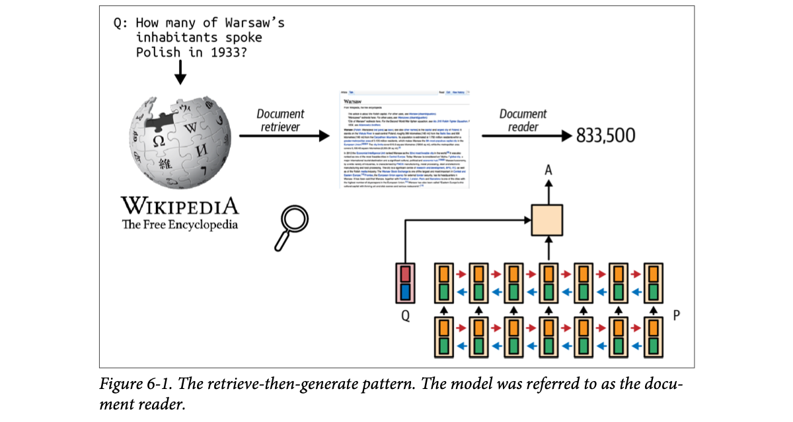
How to read this figure. Left to right. The question ("How many of Warsaw's inhabitants spoke Polish in 1933?") goes into Wikipedia. The document retriever (magnifying glass) pulls out the Warsaw article. The document reader (bottom right: a stack of recurrent cells reading the question Q and the passage P in both directions, red and blue arrows) outputs the answer A = 833,500. Two separate jobs: find the page, then read it.
The name retrieval-augmented generation was coined later by Lewis et al. (2020), "Retrieval-Augmented Generation for Knowledge-Intensive NLP Tasks". They proposed RAG for knowledge-intensive tasks, where the needed knowledge is too big to put into the model's input directly. With RAG, only the information the retriever judges most relevant goes into the model. They found that access to relevant information made answers more detailed and reduced hallucinations.
Footnote 2: around the same time another Facebook paper, Petroni et al. (2020), "How Context Affects Language Models' Factual Predictions", showed that adding a retrieval system to a pre-trained language model can dramatically improve factual answers.
Example from the book: for the query "Can Acme's fancy-printer-A300 print 100pps?" (pages per second), the model answers far better if it is handed the A300's specification sheet. (Footnote 3 credits Chetan Tekur for the example.)
Huyen's framing: RAG is a way to build context specific to each query instead of using the same context for all of them. This also helps with user data: a user's data enters only the queries that concern that user. And: context construction for foundation models plays the same role as feature engineering for classical ML. Both exist to give the model the information it needs to process an input.
An open-book exam. The student (the model) is smart but does not remember the exact numbers. A friend (the retriever) flips to the right five pages and puts them on the desk. The student reads them and writes the answer.
Where it breaks: if the friend opens the wrong pages, the student will write a confident answer from the wrong pages. RAG fixes missing knowledge, not bad retrieval.
The model's weights store knowledge in a compressed, lossy, frozen way. Retrieved text is exact and current. When the right passage sits in the prompt, the model can copy and reason over it instead of reconstructing facts from fuzzy memory; that is why hallucinations drop. In feature-engineering terms, the retrieved passage is the "feature" that carries the signal the model needs.
"Why does RAG reduce hallucinations?" Say: "Because the answer is grounded in text placed in the context, the model doesn't have to recall facts from its weights. Lewis et al. showed more detailed and less hallucinated answers. But it only helps if the retriever finds the right passages, so I evaluate retrieval separately from generation."
RAG components: plate 04. Hallucination causes: Ch.2. Feature engineering vs context: Ch.1. Hands-on RAG: Hands-On LLMs Ch.8.
In the early days of foundation models, RAG became one of the most common patterns, mainly to work around small context windows. Many people believe that once context is long enough, RAG will die. Huyen disagrees, for two reasons:
Work on longer context and work on using context better are happening in parallel. Huyen would not be surprised if a model provider builds a retrieval-like or attention-like mechanism into the model to pick out the most important parts of a context.
Anthropic suggested (2024) that for Claude, if your knowledge base is smaller than 200,000 tokens (about 500 pages), you can put the whole thing in the prompt and skip RAG. Huyen wishes other model developers gave similar RAG-vs-long-context guidance for their models.
Invented prices for illustration: $3 per million input tokens. Move the sliders. RAG sends only the top-k chunks.
Your phone could store every WhatsApp photo you have ever received. That does not mean you scroll through all of them to find your Aadhaar photo; you search. A huge context window is the huge phone storage; RAG is the search bar.
Where it breaks: for a tiny gallery (a few pages of docs), just looking at everything is fine and simpler, which is exactly Anthropic's advice.
Attention cost grows with input length, and models show "lost in the middle" behaviour: information at the start and end of a long prompt is used better than information in the middle. So adding irrelevant tokens is not free: it raises cost and latency and dilutes the signal. Retrieval acts as a filter before the model.
"Gemini has a 1M+ token context. Do we still need RAG?" Say: "Often yes. Data grows past any window; long context costs tokens and latency on every call; and models use long context unevenly. For a small, stable corpus under roughly 200K tokens, stuffing it in (with caching) is a valid simpler design. I'd measure both on an eval set." Beyond the book: prompt caching makes the "stuff it all" option cheaper for repeated static context.
A RAG system has two components:
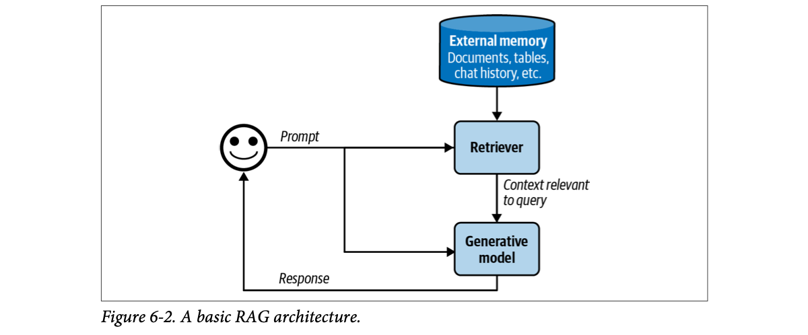
How to read this figure. The user's prompt splits in two directions. One copy goes to the retriever, which looks into external memory (documents, tables, chat history and so on) and returns "context relevant to query". The other copy goes straight to the generative model. The generator sees both the prompt and the retrieved context, and its response goes back to the user.
In the original RAG paper, Lewis et al. trained the retriever and generator together. Today they are usually trained separately, and many teams just plug together off-the-shelf retrievers and models. Still, finetuning the whole RAG system end-to-end can improve performance significantly.
A RAG system is only as good as its retriever. A retriever has two main jobs:
How you index depends on how you want to retrieve later (you will see this again and again).
A worked example. Say external memory is a database of company documents: memos, contracts, meeting notes. A document can be 10 tokens or 1 million tokens. Retrieving whole documents could make the context arbitrarily long, so documents are split into manageable chunks (chunking strategies come in plate 13). For each query, the goal is to retrieve the chunks most relevant to it. A little post-processing joins the retrieved chunks with the user prompt into the final prompt, which goes to the generator.
Huyen uses "document" for both a whole document and a chunk, since a chunk of a document is also a document. This keeps the wording consistent with classical NLP and IR (information retrieval) terminology.
# Illustrative RAG loop (own names, not a real library)
def answer(question, store, llm, k=5):
chunks = store.search(question, top_k=k) # retriever: querying
context = "\n\n".join(c.text for c in chunks) # post-processing: join chunks
prompt = f"Use only this context:\n{context}\n\nQuestion: {question}"
return llm.generate(prompt) # generator
# Indexing happens earlier, offline:
for doc in documents:
for piece in split_into_chunks(doc, size=500): # chunking
store.add(piece) # e.g. embed + insert, or add to inverted indexThe store.search call hides the retriever's algorithm (term-based or embedding-based, plates 06–09). The prompt template is the "minor post-processing" the book mentions.
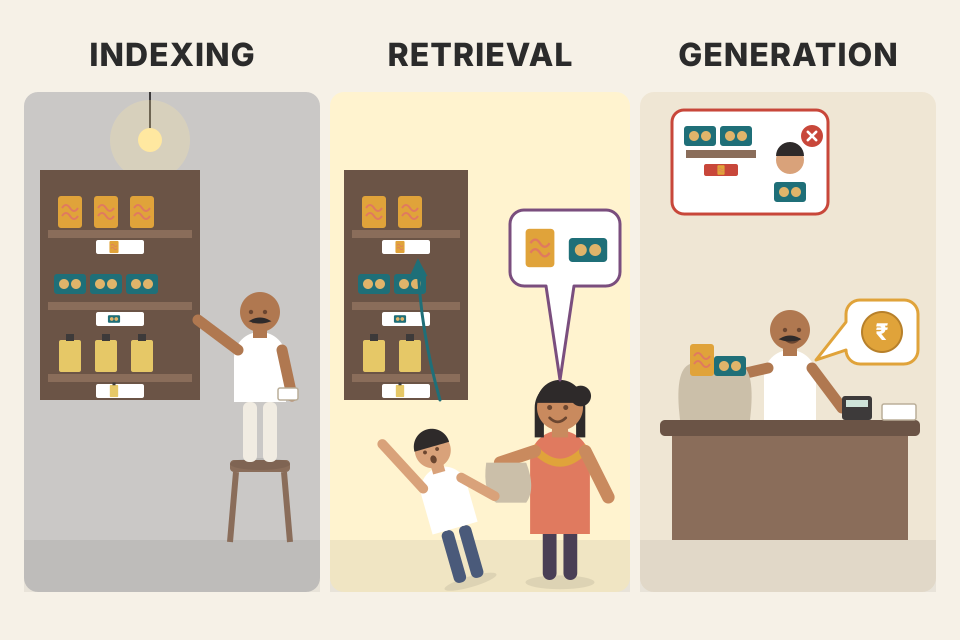
A kirana shop. The indexing is the owner arranging stock on labelled shelves at night. The querying is you saying "Maggi and Parle-G" and the helper boy running to the right shelves. The generator is the owner at the counter packing your bag and telling you the total. If the shelves were badly labelled, the boy brings the wrong packet, however polite the owner is.
Where it breaks: a shop has one item per shelf slot; text chunks overlap in meaning and the "right shelf" is a matter of degree (a score), not exact.
Splitting the work lets each part specialise: the retriever is a cheap, fast search system that can look at millions of chunks; the generator is an expensive model that can only read a few thousand tokens. Indexing moves expensive work (parsing, embedding) offline so that queries are fast. Training them jointly (as Lewis et al. did) lets the retriever learn what the generator actually finds useful, which is why end-to-end finetuning helps.
"Design a RAG system for internal docs." Say: "Two paths. Offline indexing: load docs, chunk them, embed and/or build a keyword index, store with metadata. Online querying: rewrite the query if conversational, retrieve top-k with hybrid search, rerank, build the prompt, generate with citations. I evaluate retrieval (precision/recall) and answers separately." For a RAG memory in a voice agent the same split applies; the latency budget on the online path is just tighter.
Retrieval algorithms: plates 05–12. Chunking: plate 13. A full engineered pipeline: LLM Engineer's Handbook Ch.4 and Ch.9. Where RAG sits in a full AI system: Ch.10.
Retrieval is not new and not specific to RAG. Information retrieval is about a century old: it is the backbone of search engines, recommender systems and log analytics. Many algorithms from classic retrieval work for RAG too. IR is a huge research field with a big industry around it, so the book covers only the broad strokes (and points to its GitHub repo for more).
Footnote 5: information retrieval was described as early as the 1920s, in Emanuel Goldberg's patents for a "statistical machine" that searched documents stored on film (see Sanderson and Croft, "The History of Information Retrieval Research", 2012).
Retrieval usually means fetching from one database or system; search means retrieving across several systems. The chapter uses the two words interchangeably.
At its core, retrieval ranks documents by how relevant they are to a query. Algorithms differ in how they compute the relevance score. The book covers two mechanisms: term-based and embedding-based retrieval.
In papers you will often see a different split, sparse vs dense. The book prefers term-based vs embedding-based. Here is why.
The catch: sparse embeddings exist too. SPLADE (Sparse Lexical and Expansion) (Formal et al., 2021) uses embeddings produced by BERT, but adds regularisation that pushes most values to 0. Sparsity makes the maths cheaper. Under the sparse/dense split, SPLADE would be lumped with term-based methods, even though how it works, and its strengths and weaknesses, are much closer to dense embedding retrieval. The term-based vs embedding-based split avoids that mistake.
A one-hot vector is a row of 50,000 light switches in a giant hall where exactly one is on. A dense embedding is a mixing desk with 768 knobs, all set to some level. SPLADE is the light-switch hall again, but now a few dozen switches are on at different brightness, including some for words that were never said.
Where it breaks: real vocabularies have tens of thousands of terms; the 12 cells here are a toy.
Sparse vectors can be stored and searched with an inverted index (only non-zero entries matter), which is why "sparse" became shorthand for keyword search. But the important property for behaviour is whether the values were learned from meaning (embeddings, SPLADE) or counted from surface words (TF-IDF, BM25). That is the axis the book uses.
"Sparse vs dense retrieval?" Say: "Sparse usually means lexical: BM25 over an inverted index, exact terms. Dense means embeddings with nearest-neighbour search, semantic matches. Learned sparse models like SPLADE sit in between: sparse vectors, but learned by a transformer, so they behave like semantic retrieval while still using an inverted index."
Embeddings basics: Ch.3. Term-based retrieval: plate 06. Embedding-based: plate 08. Tokens and embeddings in depth: Hands-On LLMs Ch.2.
The simplest way to find relevant documents is by keywords; some people call it lexical retrieval. For the query "AI engineering", fetch every document that contains "AI engineering". Two problems appear:
The intuition for problem 2: the more documents contain a term, the less informative it is. "For" and "at" appear almost everywhere. So a term's importance is inversely proportional to how many documents it appears in. This is the inverse document frequency (IDF). Simple version: count the documents containing the term, then divide the total number of documents by that count. With 10 documents of which 5 contain the term, IDF = 10 / 5 = 2. Higher IDF = more important term.
TF-IDF combines both. Formally, the score of document D for query Q:
The simple ratio (10/5 = 2) and the formula with a log rank terms in the same order; the log just squashes very large ratios. With natural log, log(10/5) ≈ 0.69.
Type a query (lowercased, split on non-letters, no stop-word removal so you can see why IDF matters). Each row is a document; the table shows each query term's TF in that document, its document count C(t) and IDF = ln(N/C(t)).
Try it: in the default query, "to" and "at" appear in many documents, so their IDF is small, while "vietnamese" appears in one and gets IDF ln(8/1) ≈ 2.08. Document 8 gets a boost from saying "food" twice: that is TF at work (and why long, repetitive documents can win unfairly, which BM25 fixes in the next plate).
In a Mumbai local train announcement, the word "station" is in every sentence, so hearing it tells you nothing. "Dadar" is rare and tells you exactly where you are. IDF is how surprised you are by a word; TF is how loudly a document shouts it.
Where it breaks: TF-IDF treats "car" and "automobile" as completely different words; it has no idea about meaning.
TF-IDF is a weighted keyword overlap. IDF is roughly how much information (surprise) a term carries, since a term in fewer documents splits the collection more sharply. Multiplying by TF rewards documents that focus on the term. Summing over query terms means a document matching several rare query terms ranks highest.
"Explain TF-IDF in one minute." Say: "Score each document by summing, over the query terms, how often the term appears in the document times how rare the term is across the corpus, IDF = log(N / docs containing the term). Common words get near-zero weight; rare, specific words dominate. Its known weaknesses are no length normalisation and no notion of synonyms, which BM25 and embeddings address."
BM25 and inverted index: plate 07. Lexical similarity metrics (n-gram overlap): Ch.3. TF-IDF and BM25 used in practice: Hands-On LLMs Ch.8.
Two common term-based solutions are Elasticsearch and BM25.
Elasticsearch (Shay Banon, 2010) is built on Lucene and uses an inverted index: a dictionary from each term to the documents that contain it. Given a term, you jump straight to its documents. The index can also store extra numbers such as the term frequency and the document count (how many documents contain the term), which are exactly what you need for TF-IDF. Table 6-1 (simplified):
| Term | Document count | (Document index, term frequency) for every document containing the term |
|---|---|---|
| banana | 2 | (10, 3), (5, 2) |
| machine | 4 | (1, 5), (10, 1), (38, 9), (42, 5) |
| learning | 3 | (1, 5), (38, 7), (42, 5) |
| … | … | … |
Read a row: "machine" appears in 4 documents; in document 38 it appears 9 times. To answer "machine learning", intersect or union the two lists: documents 1, 38 and 42 contain both.
Okapi BM25, the 25th generation of the "Best Matching" family, was developed by Robertson et al. in the 1980s. Its scorer is a modified TF-IDF. The key change: BM25 normalises term frequency by document length. Longer documents are more likely to contain a term, and to contain it more often, so raw TF unfairly favours them. (Footnote 6 recommends "The Probabilistic Relevance Framework: BM25 and Beyond", Robertson and Zaragoza, 2009.)
BM25 and its variants (BM25+, BM25F) are still widely used in industry and are formidable baselines against modern methods such as embedding-based retrieval. (Footnote 7: Perplexity's CEO Aravind Srinivas tweeted that genuinely beating BM25 or full-text search is hard.)
The book does not print BM25's formula. The common form is: score(D,Q) = Σ IDF(t) × f(t,D)·(k1+1) / ( f(t,D) + k1·(1 − b + b·|D|/avgdl) ), with typical k1 ≈ 1.2–2.0 and b ≈ 0.75. k1 makes TF saturate (the 10th mention adds much less than the 2nd); b controls how strongly long documents are penalised.
TF-IDF term weight grows forever with the count; BM25's grows then flattens, and shrinks when the document is longer than average (if b > 0). IDF is fixed at 1 here so you see only the TF part.
A step glossed over so far: tokenization, breaking a query into terms. The simplest way is splitting on words. But this breaks multi-word terms: "hot dog" becomes "hot" and "dog", and neither keeps the original meaning. A fix: treat the most common n-grams as terms; if the bigram "hot dog" is common, it becomes one term. You may also lowercase everything, strip punctuation and remove stop words ("the", "and", "is"…). Term-based retrieval tools usually do this automatically, and classic NLP packages such as NLTK (Natural Language Toolkit), spaCy and Stanford's CoreNLP offer tokenizers.
N-gram overlap as retrieval. Chapter 4 measured lexical similarity between two texts by n-gram overlap. Can you retrieve by n-gram overlap with the query? Yes, and it works best when query and documents have similar lengths. If documents are much longer than the query, they are likely to contain the query's n-grams anyway, so many documents get similar high scores and you cannot tell the truly relevant ones apart.
The index at the back of a textbook is an inverted index: "Photosynthesis: pages 12, 47, 103". BM25 is a smart teacher who says: a 3-page chapter that mentions photosynthesis 5 times is more about it than a 300-page appendix that mentions it 8 times.
Where it breaks: the book index was written by a human who knew what pages were "about"; BM25 only counts words.
An inverted index makes query time proportional to the length of the posting lists of the query's terms, not to the size of the collection, which is why keyword search over billions of documents is fast. BM25's saturation reflects a probabilistic model of relevance: after a few mentions, more repetitions are weak evidence. Its length normalisation corrects for the fact that long documents mention everything a bit.
"Why is BM25 still used when we have embeddings?" Say: "It's fast, cheap, needs no training, handles exact identifiers like error codes and SKUs perfectly, and is a strong baseline; beating it is genuinely hard. In production I use it alongside embeddings in hybrid search, usually via Elasticsearch/OpenSearch or a vector DB with built-in BM25."
Lexical similarity and n-grams: Ch.3 and Ch.4. Tokenization in LLMs (a different, subword kind): Hands-On LLMs Ch.2. Hybrid search: plate 12. Inverted indexes and Lucene in a databases book: DDIA Ch.3.
Term-based retrieval scores relevance at the lexical level (surface words), not the semantic level (meaning). As Chapter 3 said, how text looks does not necessarily capture what it means. So "transformer architecture" can bring back documents about the electrical device or the movie Transformers. Embedding-based retrievers instead rank documents by how close their meaning is to the query. This is also called semantic retrieval.
Indexing gains an extra job: converting each chunk into an embedding. The database that stores those embeddings is a vector database. Querying has two steps:
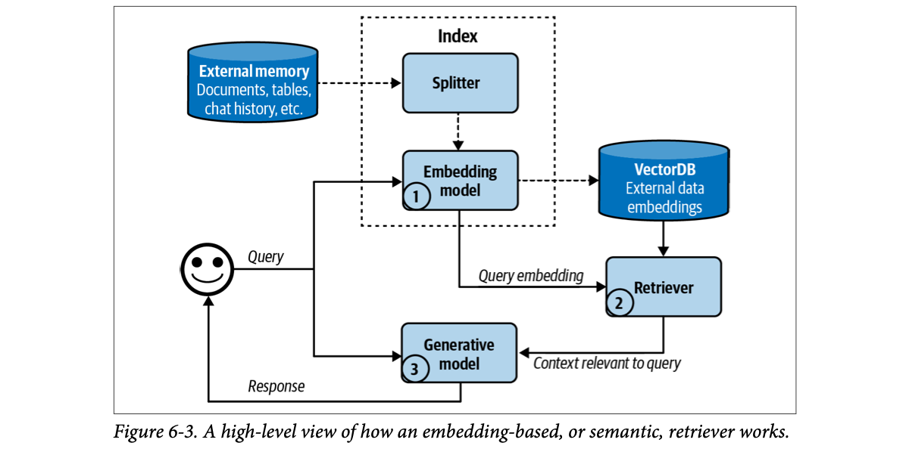
How to read this figure. Dashed arrows are the indexing path (offline): external memory → splitter (chunking) → embedding model → VectorDB, all inside the dotted "Index" box except the database. Solid arrows are the query path (online), numbered: (1) the same embedding model turns the query into a query embedding; (2) the retriever searches the VectorDB for close vectors and sends back "context relevant to query"; (3) the generative model gets the query plus that context and replies. Note the embedding model is shared by both paths.
This is a simplified flow. Real semantic retrieval systems may add a reranker to reorder all retrieved candidates and caches to cut latency. (Footnote 8: a RAG retrieval workflow shares many steps with a traditional recommender system.)
Reminder from Chapter 3: an embedding is usually a vector meant to preserve the important properties of the original data. An embedding-based retriever doesn't work if the embedding model is bad.
BM25 is computed live on the 8 toy documents (stop words removed, k1 = 1.2, b = 0.75). The "embedding" side uses hand-made 6-number meaning vectors (neural nets, electricity, movies, networking errors, cooking, Vietnamese): modelled, not a real embedding model. Green border = actually relevant to the intent.
BM25 is a librarian who finds books by matching the exact words on the spine. Embedding search is a librarian who has read every book and walks you to the shelf of books about what you mean, even if they use different words. Ask the second one for "form 16A" though, and she may bring you every tax form.
Where it breaks: real embeddings have hundreds of dimensions that no one can name; the six labelled dimensions here are a teaching device.
An embedding model is trained (often contrastively) so that texts with similar meaning land close together in vector space. Retrieval then becomes geometry: find the stored vectors with the highest cosine similarity (or smallest distance) to the query vector. Because the query and documents must live in the same space, you must use the same embedding model for both; switching models means re-embedding the whole corpus.
"What happens if you change your embedding model?" Say: "Vectors from different models aren't comparable, so the query and the index must use the same model. A change means re-embedding the full corpus, ideally into a new index, then switching traffic after evaluating retrieval on a labelled set." Good to mention for any RAG memory store: version the embedding model alongside the index.
Embedding retrieval brings a new component: the vector database. Storing vectors is the easy part. The hard part is vector search: given a query embedding, find the stored vectors close to it and return them, fast. So vectors must be indexed and stored in a way that makes search efficient.
Vector search is not unique to generative AI. Any application that uses embeddings needs it: search, recommendation, data organisation, information retrieval, clustering, fraud detection and more.
Vector search is usually framed as nearest-neighbour search: given a query, find the k nearest vectors. The naive solution is k-nearest neighbours (k-NN):
This is exact but computationally heavy and slow; use it only for small datasets. For large datasets, use an approximate nearest neighbour (ANN) algorithm. Popular vector search libraries: FAISS (Facebook AI Similarity Search; Johnson et al., 2017), Google's ScaNN (Scalable Nearest Neighbors; Sun et al., 2020), Spotify's Annoy (Bernhardsson, 2013) and Hnswlib (Hierarchical Navigable Small World; Malkov and Yashunin, 2016).
Most application developers will not implement vector search themselves, so the book gives a quick overview to help when evaluating solutions. In general, vector databases organise vectors into buckets, trees or graphs. Algorithms differ in the heuristics they use to make similar vectors likely to end up near each other. Vectors can also be quantized (stored at lower precision) or made sparse, both of which make computation cheaper. (Zilliz has a good series on vector search for those who want more.) The significant algorithms:
Vector databases became their own product category with the rise of RAG, but any database that can store vectors can be called a vector database. Many traditional databases have added, or will add, vector storage and search.
80 random 2-D points (modelled), grouped into 6 clusters (purple circles are centroids). k = 3. Exact search compares the query with all 80 points; IVF compares only with points in the nprobe closest clusters.
Try putting the query on a border between two clusters with nprobe = 1: IVF often misses a true neighbour sitting just across the border. Raising nprobe fixes recall at the cost of more comparisons. That is the "approximate" in ANN.
Finding the three people in Mumbai who live closest to you. k-NN: measure the distance to all 2 crore residents. IVF: first find your nearest two railway stations, then only check people registered near those stations. HNSW: ask a well-connected friend who knows someone nearer, who knows someone nearer still, until no one is closer (the "small world" hop).
Where it breaks: neighbourhoods have sharp borders; in 768-dimensional space almost every point is "near a border", which is why ANN tuning matters so much.
All ANN methods avoid comparing against everything. Buckets (LSH), clusters (IVF) and trees (Annoy) prune the search space to a few regions; graphs (HNSW) navigate greedily from coarse to fine layers; quantization (PQ) makes each comparison cheaper by shrinking vectors to short codes. Each trades a little recall for a lot of speed and memory, which is why ANN benchmarks report recall next to queries per second (plate 11).
"How does a vector DB find neighbours among 100M vectors in milliseconds?" Say: "Approximate nearest-neighbour indexes. HNSW builds a layered proximity graph and does greedy search, with great recall and latency but high memory. IVF clusters vectors with k-means and only scans the nearest nprobe clusters; adding product quantization compresses vectors so they fit in RAM. You tune parameters like nprobe or ef_search to trade recall for latency."
Index vs query trade-offs and ANN benchmarks: plate 11. Quantization of model weights (same idea, different object): Ch.9. Vector DB in a real pipeline (Qdrant): LLM Engineer's Handbook Ch.4. Hash indexes and B-trees for classic databases: DDIA Ch.3.
Retrieval has a long history, so mature solutions make both approaches easy to start. Each has pros and cons.
A retriever is judged by the quality of what it retrieves. RAG evaluation frameworks commonly use two metrics:
To compute them, build an evaluation set: a list of test queries and a set of documents, with each (query, document) pair annotated as relevant or not, by humans or by AI judges. Then compute the retriever's precision and recall on that set.
In production, some RAG frameworks support only context precision, not recall. Recall for a query needs the relevance of every document in the database to that query. Precision only needs you to compare the retrieved documents with the query, which an AI judge can do.
If the order matters (more relevant documents should come first), use ranking metrics: NDCG (normalized discounted cumulative gain), MAP (mean average precision) and MRR (mean reciprocal rank).
The database has 10 documents; 4 are truly relevant to the query (R1–R4, green). Click slots to change what the retriever returned at each rank (cycles: irrelevant → R1 → R2 → R3 → R4). Top-k = 5.
Duplicates of the same relevant document count once. Notice that recall needs to know there are exactly 4 relevant documents in the whole database; that is the expensive annotation the book warns about.
For semantic retrieval you must also evaluate the embeddings. As Chapter 3 explained, embeddings can be evaluated on their own (good if more similar documents have closer embeddings) or by how well they work on specific tasks. The MTEB benchmark (Muennighoff et al., 2023) evaluates embeddings on many tasks including retrieval, classification and clustering.
And the retriever should be judged in the context of the whole RAG system: a retriever is good if it helps the system produce high-quality answers (evaluating generated outputs: Chapters 3 and 4).
It depends how much you care about cost and latency, especially at query time. Much of RAG's latency comes from generating the output, especially long outputs, so the extra time for the query embedding and vector search may be small in comparison. Still, it can hurt user experience.
Cost: generating embeddings costs money, which hurts when data changes often and must be re-embedded; imagine re-embedding 100 million documents every day. Vector storage and vector search can also be expensive depending on your vector database. It is not unusual for a company's vector database spend to be one-fifth or even half of its model API spend.
| Table 6-2 (paraphrased) | Term-based retrieval | Embedding-based retrieval |
|---|---|---|
| Querying speed | Much faster | Query embedding + vector search can be slow |
| Performance | Strong out of the box, but hard to improve. Can fetch wrong documents because of term ambiguity. | Can beat term-based with finetuning. Allows more natural queries, since it works on meaning rather than terms. |
| Cost | Much cheaper | Embedding, vector storage and vector search can be expensive |
A Zomato search for "paneer". Precision: of the 10 dishes shown, how many actually contain paneer? Recall: of all the paneer dishes in the city, how many made it into your list? You can check precision by looking at your screen; checking recall needs someone to know every menu in the city.
Where it breaks: for RAG, the "user" reading the list is a model, and it may still answer well from a single relevant document, so end-to-end evaluation matters too.
Precision measures how much noise you push into the context (noise costs tokens and can mislead the generator). Recall measures whether the needed facts reach the generator at all (if not, it must guess). Ranking metrics add the position, because models and users attend more to what comes first. Recall's cost comes from needing a complete relevance labelling of the corpus per query.
"How do you evaluate a RAG retriever?" Say: "Build a labelled set of queries with their relevant chunks. Measure recall@k first, since if the right chunk isn't retrieved the generator can't use it, then precision and a ranking metric like MRR or NDCG. Check embeddings separately (MTEB as a prior, but on my own data), and finally evaluate end-to-end answer quality. In production, where recall is impractical, use an AI judge for context precision."
Embeddings evaluation and AI judges: Ch.3; evaluation pipelines: Ch.4. Hybrid search: plate 12. RAG evaluation frameworks (Ragas, ARES): LLM Engineer's Handbook Ch.7.
Retrieval systems let you trade indexing effort against querying quality. A more detailed index gives more accurate retrieval, but indexing is slower and uses more memory. The book's analogy: an index of potential customers. Adding name, company, email, phone and interests makes finding the right people easier, but takes longer to build and needs more storage.
The ANN-Benchmarks website compares ANN algorithms on several datasets using four main metrics that capture this trade-off:
Also, BEIR (Benchmarking IR; Thakur et al., 2021) is an evaluation harness for retrieval that covers 14 common retrieval benchmarks.
The recommendations in this widget are a simplified reading of the book's trade-off, not benchmark results.
The quality of a RAG system should be evaluated component by component and end to end:
A wedding caterer's guest list. Writing down only names (simple index) is quick, but on the day you struggle to find "the uncle from Pune who is vegetarian". Writing name, city, diet, table number (detailed index) takes all night, but on the day every lookup is instant.
Where it breaks: guests don't change every hour; documents in a live RAG system might, which is when build time starts to hurt.
Work done at indexing time (building graph edges, clustering, training quantizers) is work you don't do at query time. Graph indexes store many neighbour links per vector, hence high memory and slow builds but quick, accurate traversal. Hashing is cheap to build but coarse, so you must check more candidates or accept misses.
"Your vector index is too big for RAM. Options?" Say: "Quantize vectors (product quantization or scalar int8), move to IVF-PQ or a disk-based index, shard across nodes, reduce dimensions, or store fewer chunks. Then re-check recall versus QPS, the ANN-Benchmarks style trade-off, on my own queries."
Each algorithm has distinct strengths, so a production retrieval system usually combines several. Combining term-based and embedding-based retrieval is called hybrid search. There are two ways to combine.
First a cheap, less precise retriever (e.g. term-based) fetches candidates. Then a more precise, more expensive method (e.g. k-nearest neighbours) picks the best among them. This second step is called reranking.
Several retrievers fetch candidates at the same time; then their rankings are merged into one final ranking. A common merging algorithm is reciprocal rank fusion (RRF) (Cormack et al., 2009). Each retriever gives a document a score based on its rank. The simplified intuition: rank 1 scores 1/1 = 1, rank 2 scores 1/2 = 0.5; higher rank, higher score. A document's final score is the sum over all retrievers. Ranked first by one retriever and second by another: 1 + 0.5 = 1.5. The real formula:
Two retrievers each return a top-5 (modelled). Click "swap" buttons to reorder a list; slide k. With k = 0 you get the simplified version from the book (1/rank).
Worked example (default lists, k = 60). docA is rank 1 in BM25 and rank 3 in vector: 1/61 + 1/63 = 0.01639 + 0.01587 = 0.03226. docC is rank 3 and rank 1: the same 0.03226. docF appears only in the vector list at rank 2: 1/62 = 0.01613. Documents found by both retrievers float to the top even if neither ranked them first. With k = 0 the gap between rank 1 and rank 2 is huge (1 vs 0.5); with k = 60 it is tiny (0.0164 vs 0.0161), so agreement across lists matters more than any single first place.
Choosing a restaurant from two friends' top-5 lists. Sequence mode: one friend shortlists "places near the station", the foodie friend picks the best of those. Parallel mode (RRF): both give their lists, and the place that appears high on both lists wins, even if it is nobody's number one.
Where it breaks: RRF ignores how confident each friend was (the raw scores); it uses only positions.
BM25 scores and cosine similarities are on completely different scales, so you cannot just add them. RRF sidesteps calibration by using ranks only. The constant k flattens the curve so that a document ranked 1st vs 5th differs only slightly; consensus across retrievers dominates. Sequential reranking is a cost play: run the expensive scorer on 100 candidates instead of 10 million.
"How would you combine BM25 and vector search?" Say: "Run both in parallel, take the top 50 from each and fuse with reciprocal rank fusion (k around 60), because scores aren't comparable but ranks are. Then optionally rerank the top 20 with a cross-encoder. This catches both exact identifiers and paraphrased questions." Most vector DBs (Qdrant, Weaviate, Elasticsearch) support this natively (beyond the book).
Reranking as an optimization: plate 14. Why keywords get lost in embeddings: plate 08. Rerankers in practice: Hands-On LLMs Ch.8, LLM Engineer's Handbook Ch.9.
Depending on the task, some tactics raise the chance that relevant documents are fetched. The book covers four: chunking strategy, reranking, query rewriting and contextual retrieval.
How data is indexed depends on how you will retrieve it. The previous sections assumed documents were already split into chunks; now, how to split. This matters: the chunking strategy can significantly change retrieval performance.
Overlap. Without overlap, a chunk boundary can cut through important context. "I left my wife a note" split into "I left my wife" and "a note" loses the meaning in both halves. Overlapping chunks make sure boundary information lands whole in at least one chunk. With 2,048-character chunks you might use about 20 characters of overlap.
Limits. Chunk size must not exceed the generative model's maximum context length, and for embedding-based retrieval it must not exceed the embedding model's context limit either.
There is no universal best chunk size or overlap. You must experiment.
A short policy document (made up). The key fact for the query is the last sentence: after 30 days, returns need a manager's approval. Retrieval here is plain word overlap with the query (ties go to the earlier chunk) and returns the top 2 chunks (orange outline). Red underline marks words shared by two overlapping chunks.
What to notice: with small chunks (4–14 words) the key sentence is usually cut in two, and the half that is retrieved ("After 30 days, returns are accepted only") is the half that says the opposite of the truth: the "I left my wife / a note" problem. Some mid sizes work, some fail only because a boundary lands in the wrong place, and a few words of overlap or a different size flips the result. Even large chunks can fail when a boundary falls inside the key sentence (try 56). Only a chunk as big as the whole document is guaranteed to hold it, and then every query drags in every irrelevant word. This is why the book says there is no universal best size: you have to test on your own data.
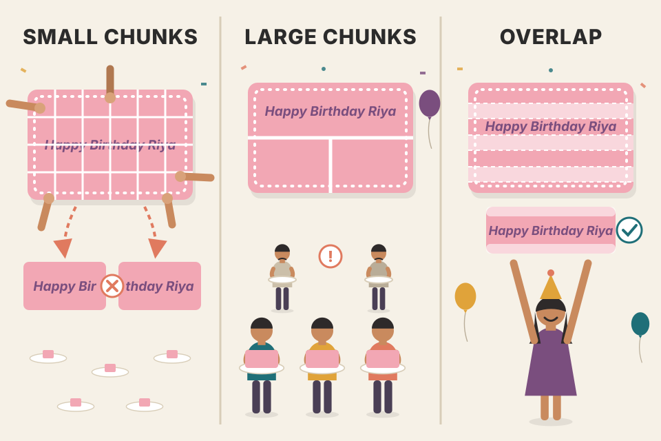
Cutting a big birthday cake for a party. Tiny pieces: everyone gets a taste of many flavours (diversity), but the piece with the "Happy Birthday Riya" lettering gets chopped into "Happy Bir" and "thday Riya". Huge pieces: lettering stays intact, but only three guests get cake. Overlap is like cutting each piece with a little extra so the letters survive in at least one slice.
Where it breaks: cake pieces don't need to be found by search; chunks do, and a piece without the topic word may never be served at all.
A chunk is the unit of retrieval: it is scored as a whole and returned as a whole. If it is too big, its embedding becomes an average of many ideas and matches nothing sharply, and it eats context. If it is too small, it loses the surrounding words that tell the retriever what it is about. Overlap and recursive splitting reduce bad cuts; metadata and contextual headers put lost context back.
"How do you choose chunk size?" Say: "Start from document structure, splitting recursively on headings, paragraphs, sentences with a max of a few hundred tokens and small overlap, staying under the embedding model's limit. Then tune empirically on a retrieval eval set: recall@k vs number of chunks and tokens per query. For a conversation memory, I chunk per message or per turn and attach metadata like speaker and timestamp."
Contextual retrieval: plate 16. Tokenizers: Ch.2. Chunking code in a real pipeline: LLM Engineer's Handbook Ch.4. Chunking in practice: Hands-On LLMs Ch.8.
The retriever's first ranking can be reranked to be more accurate. Reranking helps most when you need to cut down the number of documents, either to fit the model's context or to spend fewer input tokens.
Context reranking is different from search reranking. In search, the exact position (first vs fifth) is crucial, since users click the top results. In context reranking, order still matters a bit, because models may understand documents at the beginning and end of the context better (Chapter 5, "Context Length and Context Efficiency"). But once a document is included, its exact position matters much less than in search.
Final score = relevance × 0.5^(age / half-life). Slide the half-life to see older emails drop.
Query (imagined): "what time is my Delhi flight?" With no time weighting (huge half-life) the 400-day-old booking wins on relevance alone; with a 30-day half-life the fresh itinerary change wins.
A newspaper vendor sorting today's papers: first he grabs every paper that mentions "election" (cheap pass), then he puts today's edition on top and last week's at the bottom (time rerank). For your chai-time reading, it hardly matters whether today's paper is first or second in the pile, as long as it is in the pile.
Where it breaks: for a model, "in the pile" is not quite enough; very long piles still hide the middle.
A first-stage retriever must be fast over millions of items, so it compares query and document independently (embeddings, inverted index). A reranker sees only a few dozen candidates, so it can afford a more expensive scorer, such as a model that reads query and document together, or business signals like recency. The final top-n is then smaller and cleaner, saving tokens.
"Where does a reranker fit and why?" Say: "After retrieval, before prompt building. Retrieve top 50–100 cheaply for recall, rerank with a cross-encoder or LLM scorer for precision, keep the top 5. Add recency or metadata boosts when freshness matters, like in an email or memory assistant. Since models read the start and end of context best, I put the best chunks there."
Lost in the middle: Ch.5. Hybrid search: plate 12. Cross-encoder rerankers in code: Hands-On LLMs Ch.8, LLM Engineer's Handbook Ch.9.
Query rewriting is also called query reformulation, query normalization, and sometimes query expansion. Take this conversation:
"How about Emily Doe?" is ambiguous without context. Using it verbatim as a search query will likely fetch irrelevant results. You need to rewrite it so that it makes sense on its own: "When was the last time Emily Doe bought something from us?"
Query rewriting is not unique to RAG. Traditional search engines often do it with heuristics. In AI applications you can use another AI model with a prompt along the lines of "given this conversation, rewrite the last user input to reflect what the user is actually asking".
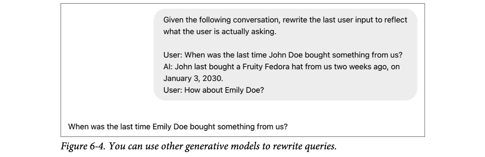
How to read this figure. The grey bubble is the prompt sent to ChatGPT: one instruction line, then the whole conversation. The line below the bubble is the model's output: a self-contained query that a retriever can use directly. The rewriter does not answer the question; it only clarifies it.
It gets harder with identity resolution or when other knowledge is needed. If the user asks "How about his wife?", you must first query your database to find out who his wife is. If you don't have that information, the rewriting model should say the query can't be resolved instead of hallucinating a name, which would lead to a wrong answer.
At a tea stall, your friend says "same for him". The chaiwala knows "same" means "cutting chai, less sugar" because he heard the earlier order. A search engine is like a new helper who just walked in: you have to say the full order again. The rewriter is the person who turns "same for him" into the full order before the new helper hears it.
Where it breaks: if nobody remembers who "him" is, the right move is to ask, not to guess.
Retrievers are stateless: they see one query string. Conversations are stateful: pronouns and ellipsis point back to earlier turns. A rewrite step uses an LLM (which can see the history) to turn the conversational query into a standalone one, so the stateless retriever gets enough signal. Each rewrite adds an LLM call, so cost and latency go up a little.
"Your RAG chatbot fails on follow-up questions. Why and how to fix?" Say: "Follow-ups like 'and for Emily?' are not standalone, so retrieval gets garbage. Add a query-rewriting step that uses the conversation history to produce a self-contained query, with identity resolution from the database where needed, and an explicit 'cannot resolve' output instead of guessing." In a voice agent, a small fast model for the rewrite keeps latency low.
Hallucination: Ch.2. Prompt chaining (rewriting is a sub-task): Ch.5. Query expansion and self-querying: LLM Engineer's Handbook Ch.9. Memory for conversation state: plate 37.
The idea: augment each chunk with relevant context so it is easier to retrieve. Options, from simple to clever:
Anthropic's prompt (paraphrased): the model gets the whole document inside document tags and the chunk inside chunk tags, and is asked for a short, succinct context that situates this chunk within the overall document, to improve search retrieval of the chunk, replying with only that context. The generated context is prepended to the chunk, and the augmented chunk is what gets indexed.
# Illustrative contextual-retrieval indexing (own names)
SITUATE = """{doc}
Here is a chunk from it:
{chunk}
Write 1-2 sentences placing this chunk in the document, to help search. Reply with that only."""
for doc in corpus:
for chunk in split(doc):
ctx = llm(SITUATE.format(doc=doc, chunk=chunk)) # ~50-100 tokens
text = ctx + "\n" + chunk # prepend
vector_db.add(embed(text), text) # embedding index
bm25_index.add(text) # and term indexThe whole document is sent once per chunk, which is why prompt caching makes this affordable in practice (beyond the book).
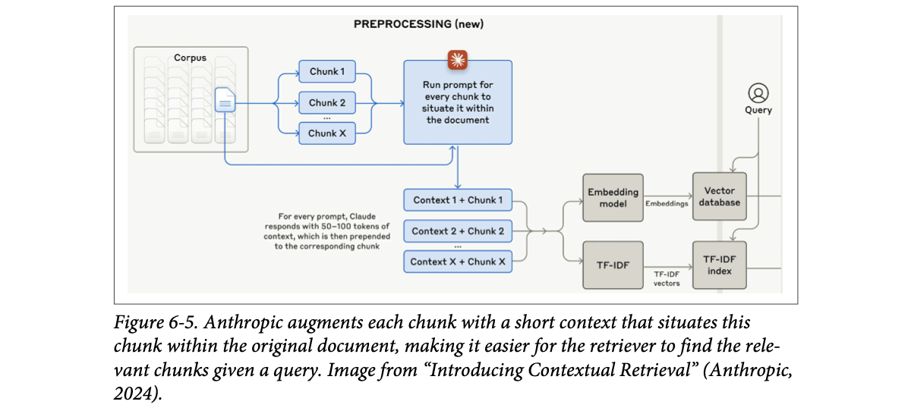
How to read this figure. Top left, a document from the corpus is split into Chunk 1…X. Each chunk, together with the full document (the arrow looping back from the document), goes into "run prompt for every chunk to situate it within the document" (Claude). The output is "Context 1 + Chunk 1" etc. (the note says 50–100 tokens of context are prepended). These augmented chunks feed two indexes: an embedding model into a vector database, and TF-IDF into a TF-IDF index. The query (right) searches both: contextual retrieval combined with hybrid search.
Example in the style of Anthropic's announcement (company and numbers illustrative). Without context, the chunk never says which company or which quarter, so questions about "ACME Q2 2023" can't match it, lexically or semantically.
A photocopy of page 47 of a court judgment says "the appellant's claim is dismissed". Which case? Which appellant? Writing "Sharma vs State of Maharashtra, 2023, page 47 of 60, final ruling on land dispute" at the top of the photocopy is exactly contextual retrieval.
Where it breaks: the label is written by a model; if the model summarises wrongly, every search on that chunk is misled.
Chunking throws away the surrounding document, which is what told you who "the company" or "it" is. Contextual retrieval spends LLM compute once at indexing time to restore that information inside each chunk, so both the embedding and the BM25 index can match queries that mention the missing entities. Query-time cost doesn't change.
"Chunks lose context: how do you fix it?" Say: "Contextual chunk headers: prepend the document title, section path and an LLM-generated 1–2 sentence situating summary per chunk before embedding and BM25 indexing, as in Anthropic's contextual retrieval. Also add metadata (entities, error codes, dates) and hypothetical questions the chunk answers. All of it is indexing-time cost, not query-time."
Chunk-size explorer (try the title checkbox): plate 13. Hybrid search: plate 12. Keywords lost in embeddings: plate 10. Metadata and data cleaning: LLM Engineer's Handbook Ch.4. Synthetic data generation for Q&A: Ch.8.
Key questions when you evaluate a retrieval solution (a vector database, search service or library):
The list leaves out features usually associated with enterprise solutions, such as access control, compliance, and data plane / control plane separation.
Renting a godown (warehouse) for your business: what goods can it handle (mechanisms), how big it is and how many trucks can unload per hour (scale), how long it takes to stock it (indexing time), how fast you can pick an order (latency), and whether rent is per square foot or per truck visit (pricing).
Where it breaks: a godown doesn't need re-stocking every time you change suppliers; switching embedding models does force re-indexing.
Each question maps to a cost or risk that appears later: lack of hybrid search shows up as missed keywords; slow bulk indexing shows up when you re-embed after a model change; per-query pricing explodes with traffic; per-vector pricing explodes with small chunks (plate 13).
"pgvector or a dedicated vector DB?" Say: "Walk the checklist: hybrid search support, ANN algorithm and filtering, scale of vectors and QPS, bulk indexing speed, latency, pricing, and enterprise needs like access control. For a few million vectors with relational filters, Postgres with pgvector keeps one system; at hundreds of millions with high QPS, a dedicated engine usually wins." (pgvector is beyond the book.)
So far the external sources were text documents. They can also be multimodal or tabular.
If the generator is multimodal, its context can be augmented with images, videos, audio and so on from external sources (the book uses images to keep things short; any modality works). Given a query, the retriever fetches both texts and images. For "What's the color of the house in the Pixar movie Up?", the retriever can fetch a picture of the house to help the model answer.
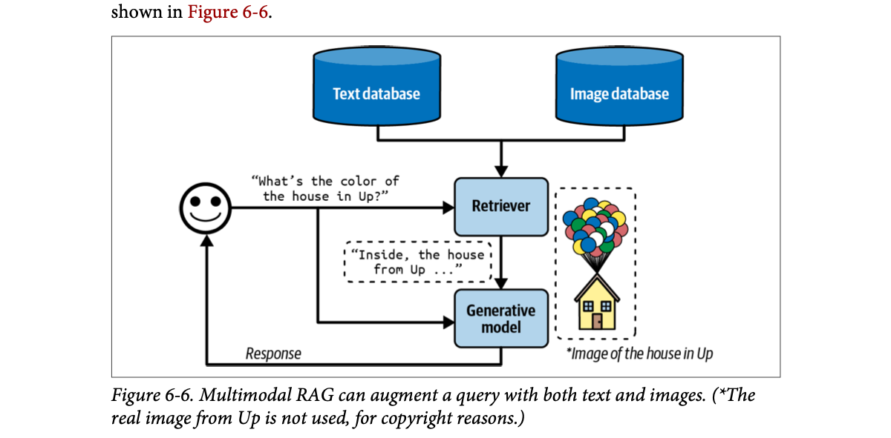
How to read this figure. Same shape as Figure 6-2, but the retriever now reads from two stores, a text database and an image database. It returns a text snippet ("Inside, the house from Up…") and an image (a drawn stand-in for the balloon house). Both go into the generative model with the original question.
Two ways to retrieve images:
A wedding photographer's archive. Searching by file name ("IMG_4521") is hopeless; searching by caption ("haldi ceremony, Pune") works if someone wrote captions; CLIP is like an assistant who has looked at every photo and can find "the one where the groom is on a horse" with no caption at all.
Where it breaks: CLIP-style models capture broad visual concepts well but can miss fine details like exact text in an image or small objects.
CLIP is trained on image–caption pairs so that an image and its matching caption get nearby embeddings. That puts text and images in one space, so a text query can be compared with image vectors by cosine similarity, exactly like text-to-text retrieval.
"Build search over product photos with text queries." Say: "Two indexes or one: caption/metadata text through the normal text pipeline, plus CLIP-style image embeddings so text queries can match image content directly. Merge with RRF and pass the top images to a multimodal generator."
Multimodal models and CLIP: Ch.2 and Hands-On LLMs Ch.9. Embeddings: plate 08.
Most applications also work with tabular data, and many queries need data from tables. The workflow for adding tabular data to the context is quite different from classic RAG.
Imagine Kitty Vogue, an ecommerce site for cat fashion, with an order table called Sales (Table 6-3):
| Order ID | Timestamp | Product ID | Product | Unit price ($) | Units | Total |
|---|---|---|---|---|---|---|
| 1 | … | 2044 | Meow Mix Seasoning | 10.99 | 1 | 10.99 |
| 2 | … | 3492 | Purr & Shake | 25 | 2 | 50 |
| 3 | … | 2045 | Fruity Fedora | 18 | 1 | 18 |
| … | … | … | … | … | … | … |
To answer "How many units of Fruity Fedora were sold in the last 7 days?", the system must query the table for all Fruity Fedora orders and sum the units. Assuming SQL access, a query in the spirit of the book's:
SELECT SUM(units) AS units_sold -- add up units
FROM Sales -- from the orders table
WHERE product_name = 'Fruity Fedora' -- only this product
AND timestamp >= CURRENT_DATE - INTERVAL '7 days'; -- last week onlyThe workflow (the system must be able to generate and execute SQL):
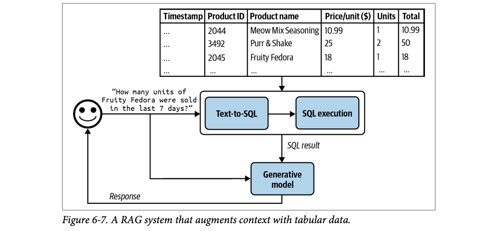
How to read this figure. The "retriever" box is replaced by a two-step box: Text-to-SQL → SQL execution, reading from the Sales table above it. What flows down is a "SQL result" (a number, not text chunks). The generative model combines that result with the original question.
If there are many tables and their schemas don't all fit in the context, add an intermediate step that predicts which tables to use for each query. Text-to-SQL can be done by the same generator that writes the final response, or by a specialised text-to-SQL model.
This section showed tools such as retrievers and SQL executors letting models handle more queries with better answers. Would more tools make a model even more capable? Tool use is the core of the agentic pattern, next.
Asking your CA "how much GST did I pay last quarter?" He doesn't search his memory or read every invoice aloud; he opens Tally, runs a report (SQL), and tells you the total in one line (generation).
Where it breaks: your CA knows which ledger to open; a model can pick the wrong table or write subtly wrong SQL, which is a "tool failure" (plate 36).
Embeddings are bad at aggregations: no chunk "contains" the sum of last week's units. A database is built for that. So instead of retrieving text, the model writes a program (SQL) that the database executes exactly, and only the small result enters the context. This is the first step from retrieval toward tool use.
"How would you let users ask questions over a warehouse of 300 tables?" Say: "Schema retrieval first: embed table and column descriptions, retrieve the relevant tables, then text-to-SQL with few-shot examples, run against a read-only replica with timeouts and row limits, and have the model answer from the result. Validate SQL before running and log every query for evaluation." Read-only access matters: it is the write-action risk of plate 24.
Many consider intelligent agents the ultimate goal of AI. Russell and Norvig's classic textbook Artificial Intelligence: A Modern Approach (1995) defines AI research as "the study and design of rational agents".
Foundation models' new capabilities make previously unimaginable agentic applications possible: autonomous, intelligent agents as assistants, coworkers and coaches. They could build a website, gather data, plan a trip, do market research, manage a customer account, automate data entry, prepare you for interviews, interview your candidates, negotiate a deal, and more. The possibilities seem endless and the potential economic value is enormous.
AI-powered agents are an emerging field with no established theoretical framework for defining, developing and evaluating them. This section is Huyen's best-effort framework built from the existing literature; it will evolve with the field and is more experimental than the rest of the book.
Roadmap of the section: an overview of agents; then the two things that decide an agent's capability, tools and planning; then, since new ways of operating bring new ways of failing, how to evaluate agents to catch those failures. Agents are new, but they build on ideas already in the book: self-critique, chain-of-thought and structured outputs.
Hiring a new junior assistant. Huge potential: they could book your travel, chase vendors, update spreadsheets. But for the first months you watch closely, because nobody has written the manual for "how to evaluate a new kind of assistant" yet.
Where it breaks: a human assistant learns from mistakes across weeks; an agent forgets unless you give it memory (plate 37).
The leap is from "a model that answers" to "a model that decides what to do next, does it, observes the result and repeats". That loop reuses earlier tools: chain-of-thought for planning, self-critique for reflection, structured outputs for well-formed tool calls.
"What makes something an agent rather than a chatbot?" Say: "An agent operates in an environment and takes actions through tools in a loop: plan, act, observe, reflect, until the goal is met. A chatbot just maps a message to a reply. The field is young, so I design agents with strong evaluation and guardrails from day one."
"Agent" is used in many engineering contexts: software agent, intelligent agent, user agent, conversational agent, reinforcement learning agent. The book's definition: an agent is anything that can perceive its environment and act upon that environment. (Footnote 10: Russell and Norvig define an agent as anything that perceives its environment through sensors and acts upon it through actuators.) So an agent is characterised by the environment it operates in and the set of actions it can perform.
Environment and tools depend on each other. The environment decides which tools are possible: in chess, the only actions are valid chess moves. And the tool inventory limits which environments an agent can work in: a robot whose only action is swimming is confined to water.
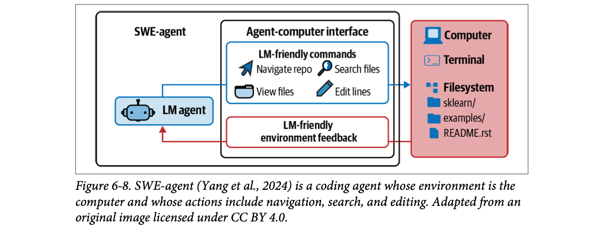
How to read this figure. Left: the LM agent (built on GPT-4). Middle: the agent-computer interface, with two halves. The blue half is the actions: LM-friendly commands to navigate the repo, search files, view files and edit lines. The red half is perception: environment feedback reformatted so the model can read it. Right: the environment, a computer with a terminal and a filesystem (a repo with sklearn/, examples/, README.rst). Blue arrow = acting, red arrow = perceiving.
An AI agent is meant to accomplish tasks, usually given by users in the input. The AI is the brain: it processes the task and feedback from the environment, plans a sequence of actions, and decides whether the task is done.
The tabular RAG system from plate 19 is a simple agent with three actions: response generation, SQL query generation and SQL query execution. Given "Project the sales revenue for Fruity Fedora over the next three months", it might:
This assumes each step fails independently and any failure ruins the task, the simple model behind the book's numbers (0.95¹⁰ ≈ 0.599, 0.95¹⁰⁰ ≈ 0.0059). Reflection and error correction (plate 31) exist precisely to break that chain.
Many-step tasks also cost time and money. (Footnote 11: an early complaint was that agents were only good for burning through your API credits.) But if agents can work autonomously, they can save a lot of human time, which can make the cost worthwhile.
Given an environment, an agent's success depends on its tool inventory and the strength of its AI planner. Tools first.
A Swiggy delivery partner is an agent. Environment: the city's roads and restaurants. Actions: pick up, ride, call the customer, mark delivered. A cycle-only rider can't take the highway (tools limit environment), and highway-only rules mean nothing in a gully (environment limits tools). Ten small decisions in a row at 95% each and one in three deliveries goes wrong somewhere.
Where it breaks: a rider notices and recovers from small errors naturally; a naive agent loop doesn't, unless you build reflection in.
The model is used in a loop: its output (an action) changes the environment, the environment's response becomes new input, and so on. Each iteration is a fresh chance of error, and errors feed into later steps, so reliability multiplies down. That's why per-step accuracy, and the ability to notice and fix mistakes, matter so much more for agents than for one-shot chat.
"Why do agents fail more than single LLM calls?" Say: "Errors compound: at 95% per step, ten steps succeed only about 60% of the time, and a hundred steps almost never. Plus actions have side effects. So I keep plans short, validate each step's output, add reflection and retries, use stronger models for planning, and put humans in the loop for risky actions."
Tools: plates 22–24. Planning: plate 25. Failure modes: plate 35. Text-to-SQL: plate 19.
A system does not need external tools to be an agent, but without them its abilities are limited. By itself a model typically does one thing (an LLM generates text, an image generator generates images). External tools make an agent vastly more capable.
Tools help an agent both perceive and act:
This section is an overview of tools; how they are used comes under Planning. The set of tools an agent has is its tool inventory. Because it decides what the agent can do, think carefully about what and how many tools to give. More tools = more capability, but also harder to understand and use them well. Finding the right set takes experimentation (see Tool selection, plate 33).
Three categories to consider: knowledge augmentation (context construction), capability extension, and tools that let the agent act upon its environment.
Relevant context drives response quality, so a key category of tools is those that augment the agent's knowledge. Already seen: text retriever, image retriever, SQL executor. Other examples: internal people search, an inventory API that returns product status, Slack retrieval, an email reader.
Many of these bring in your organisation's private processes and data. Tools can also give access to public information, especially the internet.
Web browsing was one of the earliest and most anticipated chatbot features (e.g. ChatGPT). It prevents a model from going stale: a model is stale when its training data is outdated. If training data was cut off last week, it can't answer about this week unless the information is in the context. Without browsing, no weather, news, upcoming events, stock prices, flight status and so on.
Huyen uses "web browsing" as an umbrella for all internet-access tools: web browsers and specific APIs such as search APIs, news APIs, GitHub APIs, or social media APIs (X, LinkedIn, Reddit). Browsing gives up-to-date information and reduces hallucinations, but it also exposes your agent to the cesspools of the internet: choose internet APIs carefully.
A new employee's first week: you give them access to the company wiki (retriever), the HR directory (people search), the Slack history and the inventory dashboard. Same brain, suddenly much more useful. Give them unrestricted internet too and they also find a lot of junk forwarded messages.
Where it breaks: an employee can judge a dodgy forward; a model may treat injected text on a web page as instructions (Chapter 5).
Knowledge tools are RAG generalised: instead of one retriever wired in before the model, the model chooses which source to query and with what parameters. The data still ends up as tokens in the context. Untrusted sources (the web) are a security boundary, because anything they return enters the prompt.
"How do you keep an LLM's answers current?" Say: "Don't retrain for freshness; give it tools: search or news APIs for public data, internal APIs and retrievers for private data. Treat everything returned as untrusted input: sanitise it, isolate it from instructions, and pick reputable APIs, because browsing opens the door to indirect prompt injection."
The second category addresses a model's inherent limitations, an easy performance boost. Models are notoriously bad at math: ask for 199,999 ÷ 292 and the model will likely fail; with a calculator it is trivial. Instead of training a model to be good at arithmetic, it is far more resource-efficient to give it a tool.
For the record: 199,999 ÷ 292 ≈ 684.93 (292 × 684 = 199,728, remainder 271).
Other simple but powerful tools: a calendar, a timezone converter, a unit converter (e.g. lbs to kg), a translator for languages the model is weak at.
More complex but powerful: code interpreters. Instead of training the model to understand code, let it execute code, get results and analyse failures. This turns agents into coding assistants, data analysts, even research assistants that write code to run experiments and report results. But automated code execution brings the risk of code injection attacks (Chapter 5's defensive prompt engineering); proper security measures are crucial.
Tools can make a model multimodal. A text-only model can use a text-to-image model as a tool to produce images too; the planner decides whether to call text generation, image generation or both. That is how ChatGPT generates images: it uses DALL-E. Agents can also use a code interpreter to draw charts, a LaTeX compiler to render equations, or a browser to render HTML. In the other direction, a text-only model can use an image captioning tool to "see", a transcription tool to "hear" audio, and an OCR (optical character recognition) tool to read PDFs.
Tool use can beat prompting and even finetuning. Chameleon (Lu et al., 2023) showed a GPT-4 agent with 13 tools outperforming GPT-4 alone on several benchmarks. Tools included knowledge retrieval, a query generator, an image captioner, a text detector and Bing search. On ScienceQA (science question answering) it improved the best published few-shot result by 11.37%; on TabMWP (Tabular Math Word Problems; Lu et al., 2022) it improved accuracy by 17%.
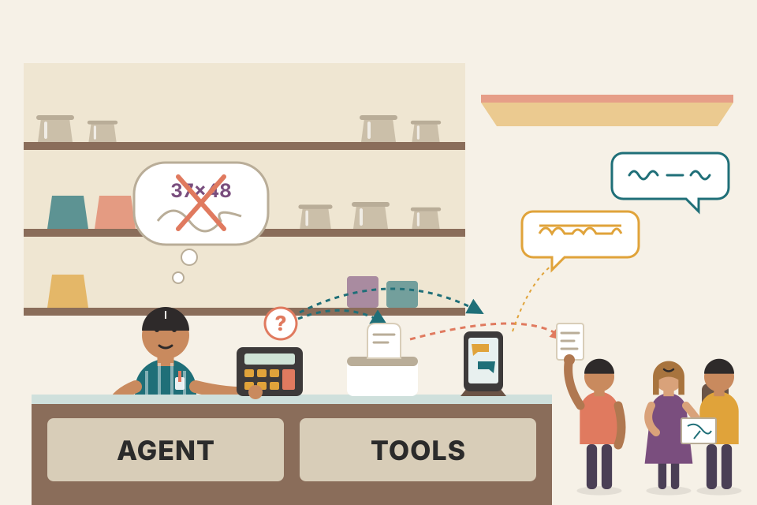
A brilliant shopkeeper who is bad at mental maths keeps a calculator on the counter. Nobody sends him to a maths course; the calculator is cheaper and never wrong. Give him a printer and he can hand out bills; give him a translator app and he can serve tourists.
Where it breaks: he still has to know when to use the calculator and type the right numbers, which is the planning problem.
An LLM predicts tokens; exact arithmetic, current time, code execution or image synthesis are not things next-token prediction does reliably. Delegating to deterministic or specialised tools turns those weaknesses into a routing problem: recognise the need, emit a well-formed call, use the result. That's why a tool-using model can beat a bigger or finetuned model on the right tasks, as Chameleon showed.
"Your LLM gets numbers wrong in reports. Fix?" Say: "Don't make the model do arithmetic: give it a calculator or code interpreter tool, or compute the numbers in code and pass them in. If I give it a code interpreter, it runs sandboxed with no network or secrets, because code execution invites injection attacks."
Code injection and defences: Ch.5. Multimodal models: Hands-On LLMs Ch.9. Tool usage patterns from Chameleon: plate 33.
So far: read-only actions that read from data sources. Tools can also perform write actions that change them. A SQL executor can read a table but also change or delete it. An email API can read an email and also reply. A banking API can show your balance and also start a transfer.
Write actions let a system do much more, e.g. automate a whole customer outreach workflow: research prospects, find contacts, draft emails, send first emails, read replies, follow up, extract orders, update databases with new orders.
But letting AI alter our lives automatically is frightening. Just as you wouldn't let an intern delete your production database, you shouldn't let an unreliable AI start bank transfers. You need trust in the system's capabilities and its security, and protection from bad actors who try to manipulate it into harmful actions.
People often bring up self-driving cars ("what if someone hacks the car to kidnap you?"). The physical example feels visceral, but an AI system can do harm without a physical presence: manipulate the stock market, steal copyrights, violate privacy, reinforce biases, spread misinformation and propaganda (Chapter 5).
These concerns are valid and any organisation using AI must take safety and security seriously. But that doesn't mean AI should never act in the real world. If people can trust a machine to take them into space, Huyen hopes security will one day be good enough to trust autonomous AI. Humans fail too; she would personally trust a self-driving car more than the average stranger to drive her around.
Just as tools make humans vastly more productive (imagine business without Excel, or a skyscraper without cranes), tools let models do far more. Many providers already support tool use, a feature often called function calling, and Huyen expects function calling with a wide set of tools to become common for most models.
Click each action to see a sensible policy (one reasonable design, not from the book).
Giving your driver the car keys (write access to the car) vs letting him check the fuel level (read access). You let him check fuel any time. You hand over keys after you trust him, and you would never give him your UPI PIN.
Where it breaks: a driver can't be tricked by a sign on the road that says "ignore your owner"; an agent can be tricked by text in an email it reads.
Read actions only add tokens to the context; the worst case is a wrong answer. Write actions have side effects in the real world that may be irreversible. Combined with compound errors (plate 21) and prompt injection (Chapter 5), that makes the permission design of write tools (least privilege, approvals, reversibility, audit logs) the main safety lever.
"How do you safely let an agent take actions?" Say: "Least privilege per tool, read-only by default, separate credentials; classify each write action by risk and reversibility; require human approval for irreversible or high-value actions; validate parameters before execution; log every call and output; rate-limit; and test against injection. Function calling makes the action explicit and inspectable before I run it."
At the heart of a foundation model agent is the model that solves the task. A task is defined by its goal and constraints. Example: plan a two-week trip from San Francisco to India with a $5,000 budget. Goal: the two-week trip. Constraint: the budget.
Complex tasks need planning. The output is a plan: a roadmap of steps to accomplish the task. Good planning means understanding the task, considering different options, and choosing the most promising. Planning is hard (anyone who has sat through a planning meeting knows), it is a well-studied computational problem that would fill volumes; the book covers the surface.
There are many ways to decompose a task; not all succeed, and some are more efficient than others. "How many companies without revenue have raised at least $1 billion?":
Option 2 is more efficient: there are vastly more companies without revenue than companies that raised $1 billion. An intelligent agent should pick option 2.
Rows the agent must look at after the first filter. Invented numbers; the point is the ratio, like filtering on the most selective column first in a SQL query.
You can couple planning and execution in one prompt: ask the model to think step by step (chain-of-thought) and execute in the same go. But what if it produces a 1,000-step plan that doesn't even achieve the goal? Without oversight, it could run for hours, burning API money, before you notice.
So decouple planning from execution: first generate a plan; execute only after it is validated. Validation options:
If the plan is bad, ask the planner for another. If it's good, execute it; tool steps invoke function calling. The execution outputs must again be evaluated. The plan doesn't have to cover the whole task; it can be a small plan for a subtask.
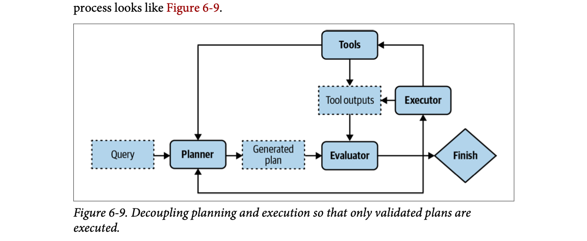
How to read this figure. Follow the bottom row: Query → Planner → Generated plan → Evaluator. From the Evaluator, three exits: back to the Planner (bad plan, try again; bottom loop), up to the Executor (good plan), or to Finish (goal met). The Executor calls Tools; tool outputs go back into the Evaluator for checking, and tools also feed information back to the Planner (top line). Dashed boxes are data (query, plan, tool outputs); solid boxes are components.
Now the system has three components: one that generates plans, one that validates them, one that executes them. If each counts as an agent, it's a multi-agent system. (Footnote 12: most agentic workflows are complex enough to involve several components, so most agents are multi-agent.)
To go faster, generate several plans in parallel and have the evaluator pick the best, another latency/cost trade-off, since parallel plans cost more.
Planning needs the intent behind a task. An intent classifier (another prompt or a trained classification model, Chapter 5) helps the agent plan and is another agent in the system. Knowing intent helps pick tools: a billing query needs a tool to fetch recent payments; a password reset query needs documentation retrieval.
Some queries are out of scope. The intent classifier should be able to label them IRRELEVANT, so the agent politely declines instead of wasting FLOPs on impossible solutions.
Humans in the loop. Humans can join any stage: a human expert can provide a plan, validate one, or execute parts of it. For complex tasks, a human can give a high-level plan the agent expands. For risky operations such as updating a database or merging a code change, the system can ask for explicit approval or let humans run them. To make this possible, define the level of automation allowed for each action.
Reflection isn't mandatory, but it significantly boosts performance. You've seen these techniques: "think step by step" asks the model to decompose; "verify if your answer is correct" asks it to reflect.
Inventory: sql_query, fetch_product_info, generate_response. Max steps = 6. Heuristic checks only, as in the book; the AI-judge step is described, not run.
A house renovation. The architect (planner) draws the plan; the municipal approver (evaluator) rejects it if it uses materials you don't have or takes 3 years; only then does the contractor (executor) start. After each stage the architect checks the work. For the step "break the load-bearing wall", you, the owner, sign off yourself (human in the loop).
Where it breaks: a human architect rarely invents materials that don't exist; an LLM planner can hallucinate tools.
Generating a plan is cheap (one LLM call); executing it is expensive and may have side effects. Validating in between is a cheap gate that stops wasted or dangerous execution. Splitting roles (planner, evaluator, executor, intent classifier) also lets you use different models or prompts per role and add human checkpoints exactly where risk is high.
"How would you structure an agent so it doesn't run away?" Say: "Separate plan from execution. An intent classifier routes or rejects out-of-scope requests; the planner proposes a plan; a validator checks it against the tool inventory, a step budget, and optionally an LLM judge; the executor runs validated steps with function calling; outputs are evaluated after each step; risky actions need human approval. Budgets on steps, tokens and time cap the damage."
An open question is how well foundation models can plan. Many researchers think autoregressive language models cannot. Meta's Chief AI Scientist Yann LeCun states flatly that autoregressive LLMs can't plan (2023). In "Can LLMs Really Reason and Plan?", Kambhampati (2023) argues LLMs are great at extracting knowledge but not at planning, and that papers claiming planning ability confuse general planning knowledge extracted from LLMs with executable plans. In his words, LLM plans may look reasonable to a lay user yet "lead to execution time interactions and errors".
There is plenty of anecdotal evidence that LLMs plan poorly, but it is unclear whether that's because we don't use them right or because they fundamentally can't.
Planning is a search problem: search among paths to the goal, predict the outcome (reward) of each path, pick the most promising. Sometimes you conclude no path exists. Search often needs backtracking: at a step with actions A and B, you take A, land in an unpromising state, go back and take B.
Some argue an autoregressive model only generates forward actions and can't backtrack, so it can't plan. Huyen says that's not necessarily true: after following A, the model can decide the path doesn't make sense and revise it using B, effectively backtracking. It can also start over and pick another path.
Maybe LLMs plan poorly because they lack the tooling needed to plan. Planning needs not only the available actions but the potential outcome of each. Walking up a mountain: turn right, turn left, turn around, or go straight; but if turning right drops you off a cliff, you shouldn't consider it. Technically, an action moves you from one state to another, and you need to know the outcome state to decide whether to act.
So it isn't enough to prompt a model to output only a sequence of actions, which is what chain-of-thought does. "Reasoning with Language Model is Planning with World Model" (Hao et al., 2023) argues an LLM, holding so much world knowledge, can predict each action's outcome and use that prediction to make coherent plans.
Even if AI can't plan, it can still be part of a planner: an LLM augmented with a search tool and a state-tracking system might plan.
The agent is a core concept of RL, which Wikipedia describes as being concerned with how an intelligent agent should act in a dynamic environment to maximise cumulative reward. RL agents and FM agents are alike: both are characterised by environments and possible actions. The difference is how the planner works:
| RL agent | FM agent | |
|---|---|---|
| Planner | Trained by an RL algorithm | The model itself is the planner |
| How to improve | More RL training: lots of time and resources | Prompting or finetuning: generally less time and fewer resources |
Nothing prevents an FM agent from using RL algorithms to improve. Huyen suspects that in the long run FM agents and RL agents will merge.
Planning a route through Old Delhi's lanes. Someone who has read every guidebook (an LLM) can describe the area beautifully, but may still send you into a lane that's closed today. Knowing what each turn leads to, and being willing to walk back and try the next lane, is real planning.
Where it breaks: a person can physically see the closed lane; an LLM only "sees" outcomes through tools and feedback.
Classic planners search explicitly over states with a transition model (what happens if I do X) and a reward. A plain LLM generates a plausible-sounding sequence in one pass, with no explicit state tracking or lookahead. Adding outcome prediction ("world model"), external search and feedback from real execution gives it the missing pieces: that's the motivation for tree-search methods, reflection loops and tool-based state tracking.
"Can LLMs plan?" Say: "Debated. LeCun and Kambhampati argue autoregressive LLMs produce plausible but non-executable plans. Others show they can backtrack by revising or restarting, and can predict action outcomes as a world model. Practically, I don't rely on a single-shot plan: I validate plans, execute step by step with feedback, and add search or state tracking where the task needs it."
The simplest way to turn a model into a plan generator is prompt engineering. Example: an agent that helps Kitty Vogue customers learn about products, with three external tools: retrieve products by price, retrieve top products, retrieve product information. The book's illustrative system prompt (production prompts are likely more complex) says, in effect:
get_today_date(), fetch_top_products(start_date, end_date, num_products), fetch_product_info(product_name), generate_query(task_history, tool_output), generate_response(query).# Same idea, own wording (illustrative)
PLANNER = """You plan steps for a shop assistant. Allowed actions:
today() -> current date
top_sellers(from_date, to_date, n) -> best-selling products
product_details(name) -> price, sizes, description
build_query(history, last_output) -> text for the responder
respond(query) -> final answer
Return ONLY a list of allowed actions.
Task: "Describe the Purr & Shake" Plan: [product_details, build_query, respond]
Task: "Top seller this month?" Plan: [today, top_sellers, build_query, respond]
Task: {user_task}
Plan:"""Two things to note:
generate_query takes the task's current history and the most recent tool outputs to produce a query for the response generator. Each step's tool output is added to the task history.For "What's the price of the best-selling product last week", a plan might be: 1. get_time() 2. fetch_top_products() 3. fetch_product_info() 4. generate_query() 5. generate_response().
Notice the book's own example plan calls get_time() even though the prompt lists get_today_date(), and its parameter example calls retrieve_top_products rather than fetch_top_products. Small name mismatches like these are exactly the "invalid tool" errors an agent makes (plate 35).
What about parameters? They are hard to predict up front because they often come from earlier tool outputs. If step 1 returns "2030-09-13", the agent can reason that the next call should be top products with start_date "2030-09-07", end_date "2030-09-13", num_products 1.
Often there isn't enough information to fix the parameters. "What's the average price of best-selling products?" leaves open: how many best sellers? Best sellers of last week, last month or all time? So models frequently guess, and guesses can be wrong.
Because both the action sequence and parameters are generated by AI, they can be hallucinated: calling an invalid function, or a valid one with wrong parameters. General techniques for improving models also improve planning:
Your mother hands you a shopping list before you go to the market: "vegetables, dal, oil". Quantities are decided at the shop after you see prices and freshness (parameters inferred from earlier outputs). If the list says "the usual sweets" you will have to guess which ones, and you may be wrong.
Where it breaks: you can phone home to ask; an agent must be explicitly designed to ask clarifying questions.
The planner is just an LLM doing in-context learning: the examples teach the plan format, the tool list constrains the vocabulary. Because it's generation, it can produce names not on the list and values not grounded in data. Clear tool docs, simpler tools and examples reduce the space of plausible-but-wrong outputs.
"Your agent calls tools with wrong arguments. What do you try?" Say: "In order of cost: better tool and parameter descriptions with examples; simplify or split complex tools; validate arguments against a schema and return clear errors the model can fix; add clarifying questions for ambiguous requests; switch to a stronger model; finally finetune on good traces."
Many providers offer tool use for their models, effectively turning them into agents. A tool is a function, so invoking a tool is often called function calling. APIs differ, but generally:
required: the model must use at least one tool.none: the model shouldn't use any tool.auto: the model decides which tools to use.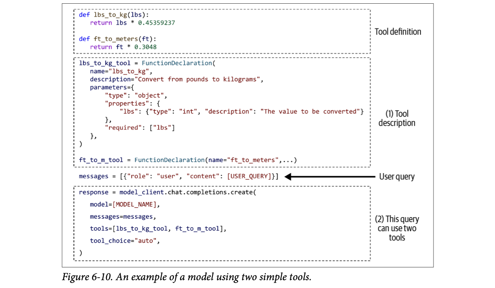
How to read this figure. Four dashed boxes, top to bottom. Tool definition: two ordinary Python functions (pounds to kilograms, feet to metres). (1) Tool description: a declaration with a name, a one-line description and a JSON-schema "parameters" object (one integer property lbs, required); the second tool is declared the same way. User query: a messages list with the user's question. (2) This query can use two tools: the chat call passes the model name, messages, the two tool declarations and tool_choice="auto". It is pseudocode meant to represent many APIs; check your API's docs.
Given a query, the agent then generates which tools to use and their parameters. Some APIs ensure only valid functions are generated, but they can't guarantee correct parameter values.
For "How many kilograms are 40 pounds?", the agent might choose lbs_to_kg with lbs = 40. The response (shape paraphrased from the book) has finish_reason='tool_calls', an assistant message with no text content, and a list of tool calls, each naming the function (lbs_to_kg) and its arguments as a JSON string ({"lbs": 40}). Your code then runs lbs_to_kg(lbs=40) and uses the output to answer the user.
# The loop your code runs around a function-calling API (illustrative)
TOOLS = {"lbs_to_kg": lambda lbs: lbs * 0.45359237,
"ft_to_meters": lambda ft: ft * 0.3048}
reply = model.chat(messages, tools=[lbs_decl, ft_decl], tool_choice="auto")
while reply.finish_reason == "tool_calls": # model asked for tools
for call in reply.tool_calls:
args = json.loads(call.arguments) # e.g. {"lbs": 40}
log(call.name, args) # always record the values used
result = TOOLS[call.name](**args) # YOUR code executes the tool
messages.append(tool_result(call.id, result))
reply = model.chat(messages, tools=[lbs_decl, ft_decl])
print(reply.content) # "40 pounds is about 18.14 kilograms."Key point: the model never runs anything. It only emits a structured request; your application executes it and sends back the result.
When working with agents, always ask the system to report the parameter values it uses for each function call, and inspect them to make sure they're correct.
Rule-based stand-in for the model (modelled behaviour, not a real API). Pick a query and a tool_choice setting.
Ordering through a waiter. You (the model) don't walk into the kitchen; you fill in an order slip with the dish name and options ("paneer tikka, less spicy, 2 plates"). The kitchen (your code) cooks and sends the plate back. The menu card is the tool declaration; "chef's choice" is auto, "you must order something" is required, "drinks only, no food" is none.
Where it breaks: a waiter will query "2 plates or 20?"; an API checks the slip's format, not whether 20 makes sense.
Providers post-train models to emit tool calls in a special structured format when given tool schemas; tool declarations are serialised into the prompt. The API may use constrained decoding so names and JSON shape are valid, but values are still ordinary generated tokens, hence "valid function, wrong value" errors. Execution is entirely on your side, which is where you validate, authorise and log.
"Explain function calling end to end." Say: "I declare tools with name, description and JSON-schema params. I send messages plus the allowed tools and a tool_choice mode. The model returns either text or tool calls with JSON arguments. My code validates the arguments, executes, appends results as tool messages, and calls the model again until it returns a final answer. I log every call and its arguments, and cap iterations." This is exactly the loop behind a tool-calling voice agent.
A plan is a roadmap, and roadmaps come at different levels of granularity. For a year: quarter-by-quarter is higher-level than month-by-month, which is higher-level than week-by-week.
There's a planning/execution trade-off: a detailed plan is harder to generate but easier to execute; a high-level plan is easier to generate but harder to execute. A way around it: hierarchical planning. First a planner makes a high-level plan (quarter by quarter); then, for each quarter, the same or another planner makes a month-by-month plan.
All the plans so far used exact function names, which is very granular. Problem: a tool inventory changes over time. If get_time() is renamed get_current_time(), you must update the prompt and all examples. Exact names also make it hard to reuse a planner across use cases with different tool APIs. And if you finetuned a model to plan with the old inventory, you'd have to finetune again.
Alternative: plans in more natural language, higher-level than domain-specific function names. For "What's the price of the best-selling product last week": 1. get current date 2. retrieve the best-selling product last week 3. retrieve product information 4. generate query 5. generate response.
Benefits: the planner becomes robust to tool API changes; models trained mostly on natural language are likely better at understanding and generating natural-language plans and less likely to hallucinate. Downside: you need a translator to turn each natural-language action into executable commands. (Footnote 13: Chameleon calls this translator a program generator.) But translating is a much simpler task than planning and can be done by weaker models with lower hallucination risk.
A wedding planner's high-level plan says "book caterer, book decorator, send invites". Her assistant translates "book caterer" into "call Sharma Caterers at 98xxxxxx". If Sharma Caterers changes its number, only the assistant's phone book changes, not the master plan.
Where it breaks: if the assistant mistranslates "book caterer" into the wrong vendor, you get a translation error (plate 36).
It's an abstraction layer, like an interface in software. The planner targets a stable vocabulary of intentions; the translator binds intentions to concrete, changeable APIs. Splitting a hard task (planning) from an easy one (translation) also lets you spend a strong model on the hard part and a cheap model on the easy part.
"How do you keep an agent stable as tools change?" Say: "Plan at the level of intents, not function names, and keep a translation layer that maps intents to the current tool API, like hierarchical planning: high-level plan, then a detailed sub-plan per step. Renames and new tools then touch the translator and tool docs, not the planner prompt or a finetuned planner."
The plans so far were sequential: each action runs after the previous one finishes. The order in which actions execute is the control flow. Others are parallel, if statement and for loop:
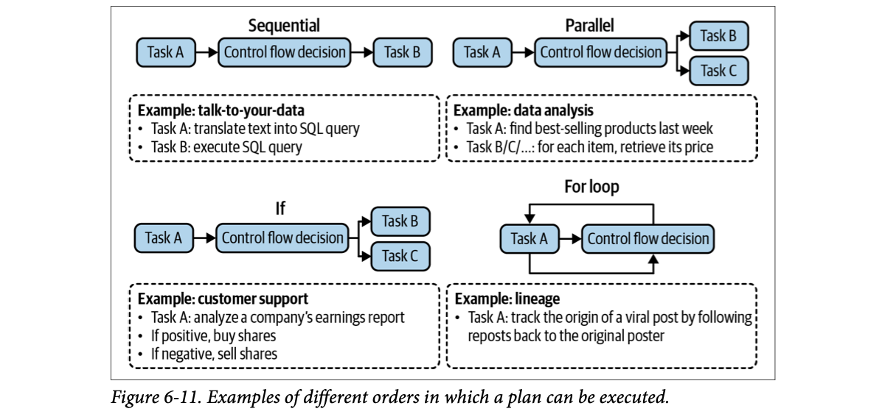
How to read this figure. Each panel is Task A → a control flow decision → what happens next, with an example underneath. Sequential (talk-to-your-data: translate text to SQL, then execute it). Parallel (data analysis: find last week's best sellers, then fetch each item's price in parallel branches B, C, …). If (the figure's example box is labelled customer support but describes analysing an earnings report and buying if positive, selling if negative). For loop (lineage: trace a viral post's origin by following reposts back, looping until you reach the original poster). Note the figure's loop example differs from the text's random-prime example; both show "repeat until a condition".
In traditional software, control-flow conditions are exact. In AI agents, AI models decide the control flow. Non-sequential plans are harder to both generate and translate into executable commands.
When evaluating an agent framework, check which control flows it supports. If the system must browse ten websites, can it do it simultaneously? Parallel execution can significantly reduce the latency users perceive.
Cooking a thali. Sequential: you can't fry the tadka before heating the oil. Parallel: rice, dal and sabzi cook on three burners at once. If: if the guest is Jain, skip onion. For loop: keep making rotis until everyone says "bas".
Where it breaks: in your kitchen the "if" is a clear rule; in an agent, a model decides whether the condition is met, and can decide wrongly.
A plan with branches and loops is a small program. For the model, generating a correct program with conditions is harder than a straight list, and the translator must map it onto real concurrency and branching. Parallel steps only help if the steps are independent; the framework must detect or be told that.
"How do you cut agent latency?" Say: "Run independent tool calls in parallel (most function-calling APIs can return several calls at once), stream the final answer, use smaller models for routing and translation, cache tool results, and cap loops. Check the framework actually supports parallel, conditional and looping control flow."
Even the best plans need constant evaluation and adjustment. Reflection isn't strictly necessary for an agent to operate, but it's necessary for an agent to succeed. It helps at many points:
Reflection and error correction are two mechanisms that go hand in hand: reflection produces insights that uncover errors to correct. Reflection can be done by the same agent with self-critique prompts, or by a separate component such as a specialised scorer, a model that outputs a concrete score for each outcome.
ReAct (Yao et al., 2022) introduced interleaving reasoning and action, now a common agent pattern. "Reasoning" here covers both planning and reflection. At each step the agent explains its thinking (planning), takes an action, then analyses the observation (reflection), until it decides the task is finished. It's prompted with examples to output:
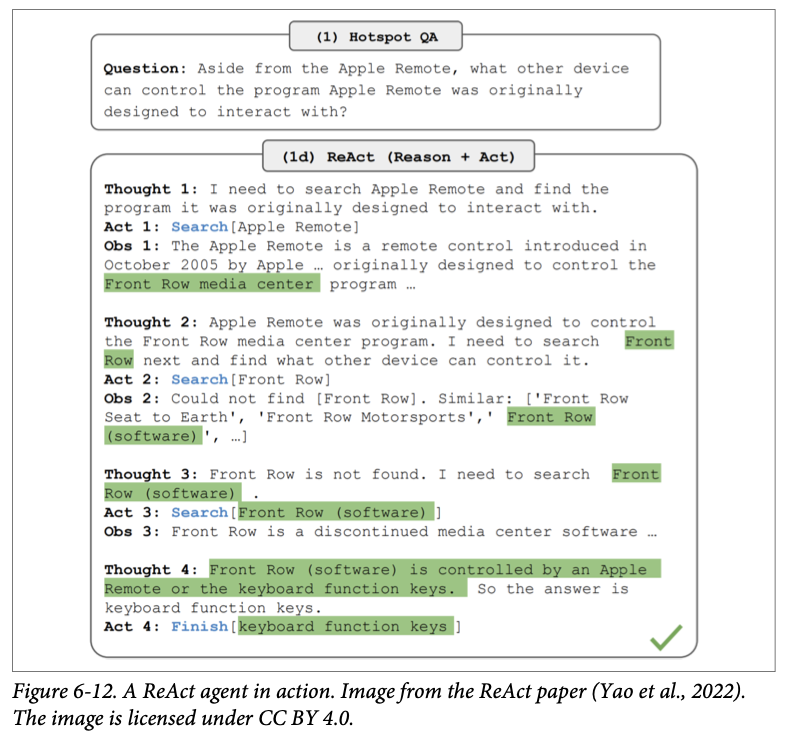
How to read this figure. A HotpotQA question (Yang et al., 2018), a multi-hop benchmark where answering needs several lookups: besides the Apple Remote, what other device can control the program it was designed for? The agent searches "Apple Remote" (learns it was designed for the Front Row media center); searches "Front Row" (not found, but sees similar titles including "Front Row (software)"); corrects itself and searches "Front Row (software)"; reads it is controlled by an Apple Remote or the keyboard function keys; finishes with "keyboard function keys". Green highlights show the facts carried from each observation into the next thought. Thought 3 is reflection fixing a failed action.
Reflection also works in a multi-agent setting: one agent plans and acts, another evaluates the outcome after each step or every few steps. (Footnote 14: this resembles the actor-critic method in RL; Konda and Tsitsiklis, 1999.)
If the response fails, you can prompt the agent to reflect on why it failed and how to improve, then generate a new plan, so it learns from mistakes. Example: an evaluator finds generated code fails ⅓ of test cases; the agent reflects that it ignored arrays where all numbers are negative; the actor writes new code handling all-negative arrays.
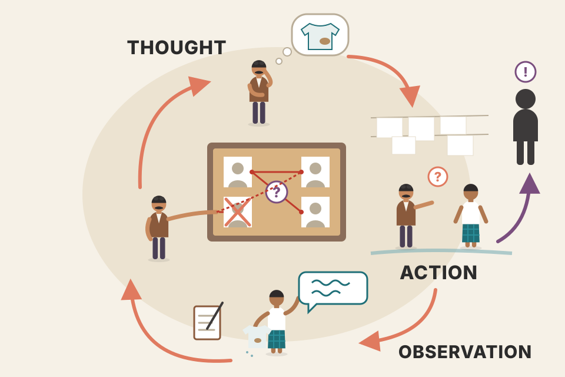
A detective in a Hindi crime serial: says aloud what he suspects (thought), goes to question the dhobi (action), hears the dhobi's story (observation), and revises his theory (reflection), round after round, until he names the culprit (finish).
Where it breaks: the detective's monologue is free; every ReAct "thought" is paid output tokens and adds latency.
Writing the thought down before acting conditions the next action on an explicit plan; reading the observation and writing a new thought conditions the next step on real feedback instead of the model's assumptions. That closes the loop that a single upfront plan lacks: errors get noticed one step later instead of at the end, which directly fights compound error (plate 21).
"What is ReAct?" Say: "Reason + Act. The model alternates Thought, Action (a tool call) and Observation (the tool result) in one growing transcript until it emits Finish. Thoughts do planning and reflection, so it can recover from failed searches. It's the default loop in most agent frameworks; today's native tool-calling APIs implement the same loop with structured tool messages instead of text parsing."
Self-critique and chain-of-thought: Ch.5. Reflexion: plate 32. AI judges as scorers: Ch.3. ReAct with LangChain in code: Hands-On LLMs Ch.7.
Learning from failures is the approach of Reflexion (Shinn et al., 2023). Reflection is split into two modules: an evaluator that judges the outcome, and a self-reflection module that analyses what went wrong. The authors call a plan a trajectory; after each evaluation and self-reflection, the agent proposes a new trajectory.
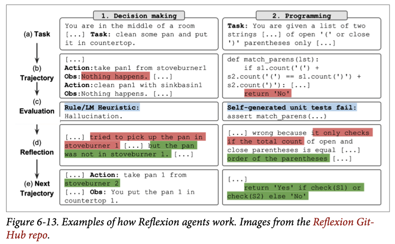
How to read this figure. Read each column top to bottom through rows (a)–(e). Left, decision making: (a) task, clean a pan and put it on the countertop; (b) trajectory, it tries to take the pan from stoveburner 1 and "nothing happens"; (c) evaluation by a rule/LM heuristic: hallucination; (d) reflection: it tried the pan on stoveburner 1, but the pan wasn't there; (e) next trajectory: take the pan from stoveburner 2, success. Right, programming: (a) task about balanced parentheses in two strings; (b) code that only compares counts of "(" and ")"; (c) self-generated unit tests fail; (d) reflection: wrong because it only checks the total count, not the order; (e) next trajectory checks order. Red = the mistake, green = the fix.
Compared with plan generation, reflection is relatively easy to implement and can bring surprisingly good improvements. The downside is latency and cost: thoughts, observations and sometimes actions take many tokens, raising cost and user-perceived latency, especially for tasks with many intermediate steps. And to make agents follow the format, both ReAct and Reflexion authors used plenty of examples in their prompts, which increases input-token cost and leaves less context space for other information.
Every step re-sends the growing transcript. Invented prices: $3 per M input tokens, $15 per M output tokens.
A student who failed a mock exam. The teacher marks the paper (evaluator); the student writes in his notebook "I lost marks because I forgot units in physics answers" (self-reflection); next attempt, he writes units everywhere (new trajectory).
Where it breaks: the student keeps his notebook; an agent's reflection must be stored in memory or the prompt, or it is forgotten next task.
A failure signal (a test, a heuristic, a judge) is turned into a verbal lesson and fed back into the context for the next attempt: learning without changing weights. It works because diagnosing a specific failure is easier than planning perfectly up front. It costs tokens because the lesson, the trajectory and the format examples all ride along in every subsequent call.
"How would you make a coding agent improve on retries?" Say: "Reflexion-style: run tests as the evaluator; on failure, prompt the model to explain why the attempt failed, add that reflection to the context, and retry, up to N attempts. It's cheap to build and effective, but watch token cost and latency, and trim few-shot examples or summarise old trajectories to save context."
Tools often decide whether a task succeeds, so choose them carefully. The right tools depend on the environment and the task, and also on the AI model powering the agent.
There is no foolproof guide. Agent papers use very different inventories: Toolformer (Schick et al., 2023) finetuned GPT-J to learn 5 tools; Chameleon (Lu et al., 2023) uses 13 tools; Gorilla (Patil et al., 2023) tried to get agents to pick the right API call among 1,645 APIs.
More tools = more capability, but the harder it is to use them efficiently, just as it's harder for people to master a large toolbox. More tools also means longer tool descriptions, which may not fit in the context.
Tool selection needs experimentation and analysis:
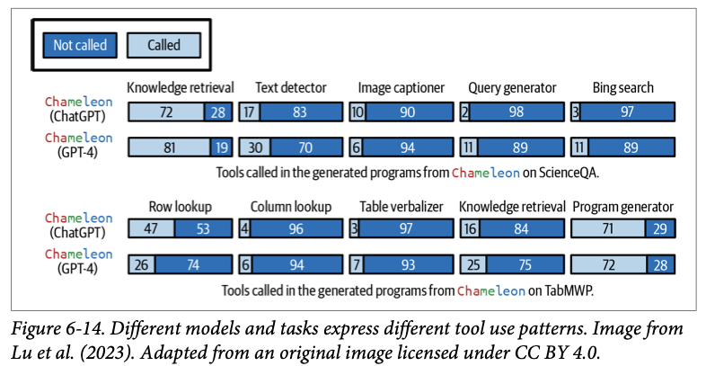
How to read this figure. Each bar is split into "not called" (dark) and "called" (light) percentages of generated programs. Top block, ScienceQA: knowledge retrieval is called in 72% of ChatGPT programs and 81% of GPT-4 programs; image captioner 10% vs 6%; query generator and Bing search are rare (2–11%). Bottom block, TabMWP: knowledge retrieval drops to 16% (ChatGPT) and 25% (GPT-4); the program generator is called 71–72%; row lookup 47% vs 26%; column lookup 4–6%. Same agent design, very different tool use per task and per model.
Lu et al.'s experiments show two things:
When evaluating an agent framework, check which planners and tools it supports; frameworks focus on different categories. AutoGPT focuses on social media APIs (Reddit, X, Wikipedia); Composio focuses on enterprise APIs (Google Apps, GitHub, Slack). Your needs will change, so also check how easy it is to add new tools.
Untick a tool to remove it from the inventory. The numbers are invented to show the method: a tool whose removal doesn't hurt is a candidate to drop.
A plumber's bag. Carry every tool in the shop and you waste time digging for the right spanner, and the bag won't close (context limit). A good plumber notices which tools he never uses and leaves them in the van.
Where it breaks: two plumbers with the same job may prefer different tools, and so do different models (GPT-4 vs ChatGPT in Fig 6-14).
Every tool adds a description to the prompt and one more option the model must choose between; similar tools confuse it. Ablation measures each tool's marginal value; call-distribution plots show which tools are dead weight; error analysis shows which tool interfaces are too hard for this model.
"Your agent has 40 tools and picks the wrong one often." Say: "Measure first: plot call distribution and per-tool error rates, and ablate. Remove unused tools, merge overlapping ones, rewrite confusing ones, and if still too many, route by intent to a smaller tool subset per query, or retrieve relevant tool descriptions dynamically."
Tool categories: plates 22–24. Tool transitions: plate 34. Intent classification for routing: plate 25. Ablation and evaluation design: Ch.4.
People get more productive not just by using given tools but by building more powerful tools from simpler ones. Can AI create new tools from its initial tools?
Chameleon (Lu et al., 2023) proposes studying tool transition: after tool X, how likely is the agent to call tool Y? If two tools are frequently used together, they can be combined into a bigger tool. An agent aware of this could combine its initial tools to keep building more complex ones.
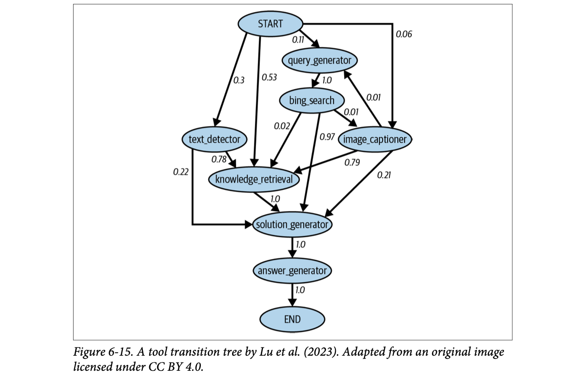
How to read this figure. Nodes are tools; an arrow's number is the probability that the next tool called is the one it points to. From START: knowledge_retrieval 0.53, text_detector 0.3, query_generator 0.11, image_captioner 0.06. query_generator → bing_search always (1.0); bing_search → solution_generator 0.97; text_detector → knowledge_retrieval 0.78; image_captioner → knowledge_retrieval 0.79; knowledge_retrieval → solution_generator 1.0 → answer_generator 1.0 → END. Edges with probability 1.0 (query_generator → bing_search, solution_generator → answer_generator) are prime candidates to merge into one bigger tool.
Edge probabilities from Figure 6-15. Merging is the idea the book describes; the "new tool" names are just labels.
Voyager (Wang et al., 2023; the book spells it "Vogager") proposes a skill manager that tracks new skills (tools) the agent acquires, for reuse. Each skill is a coding program. When the skill manager decides a new skill is useful (e.g. it helped the agent finish a task), it adds it to the skill library, conceptually like the tool inventory. Later tasks can retrieve and use it.
Wrapping up tools and planning: an agent's success depends on its tool inventory and its planning. Failure in either makes the agent fail. Next: failure modes and how to evaluate them.
A chaiwala notices he always boils water, then adds tea leaves, then sugar, then milk, in that order. He pre-mixes leaves and sugar into one jar: one step instead of two. Voyager is him writing that recipe on a card and pinning it up so tomorrow's helper can reuse it.
Where it breaks: a merged tool is less flexible; if some customers want no sugar, the pre-mix hurts.
Tool-call logs form a Markov-chain-like transition graph. Near-deterministic transitions are wasted planning decisions; fusing them into one tool shortens plans, cutting compound error and tokens. A skill library is long-term memory for procedures: retrieved like RAG documents, but what is retrieved is runnable code.
"How can an agent get better over time without retraining?" Say: "Mine its traces: build a tool transition graph and fuse tools that are almost always chained; store successful code or procedures in a skill library, Voyager-style, and retrieve them for similar tasks; and keep reflections from failures in memory."
Evaluation is about detecting failures. The more complex the task, the more failure points. Beyond the failures common to all AI apps (Chapters 3 and 4), agents have unique failures from planning, tool execution and efficiency. Some are easier to catch than others. To evaluate an agent: identify its failure modes and measure how often each happens.
Huyen built a simple benchmark illustrating these failure modes (on the book's GitHub). Public options include the Berkeley Function Calling Leaderboard, the AgentOps evaluation harness and the TravelPlanner benchmark.
The most common is tool use failure. The plan may contain:
bing_search, which isn't in the inventory.lbs_to_kg with two parameters, but it takes only one, lbs.lbs_to_kg with lbs = 100 when it should be 120.Another is goal failure: the agent doesn't achieve the goal, because the plan doesn't solve the task, or solves it while breaking constraints. Asked for a two-week trip from San Francisco to Hanoi under $5,000, it might plan a trip to Ho Chi Minh City, or a Hanoi trip way over budget.
Time is a constraint often overlooked in agent evaluation. Sometimes time matters little (assign a task, check back when done). But often an agent becomes less useful with time: a grant proposal finished after the deadline isn't helpful.
An interesting failure comes from errors in reflection: the agent is convinced it finished when it didn't. Asked to assign 50 people to 30 hotel rooms, it assigns only 40 and insists the task is done.
How to measure. Create a planning dataset of (task, tool inventory) examples. For each task, have the agent generate K plans. Compute:
Look for patterns: which task types fail more, and why do you think so? Which tools does the model often get wrong? Some tools are harder to use; improve with better prompting, more examples or finetuning; if all fail, swap the tool for something easier.
Inventory: lbs_to_kg(lbs), flight_search(origin, dest, date), hotel_search(city, nights). Task: the user weighs 120 lbs / plans Hanoi, 14 nights, $5,000.
A travel agent who books a train that doesn't exist (invalid tool), fills the IRCTC form with the date in the name field (invalid parameters), books 3 tickets instead of 4 (wrong value), books to Pune when you said Nashik (goal failure), or confirms after the Tatkal window closed (time), and then tells you "all done" (reflection error).
Where it breaks: you'd fire a human after one such day; for an agent you measure the rate of each error over many tasks and fix the biggest bucket.
Planning outputs are structured, so many failures can be checked automatically: tool name in inventory? arguments match schema? Values and goal satisfaction need ground truth or a judge. Generating K plans per task gives you rates and a "plans needed until valid" number, which is a direct measure of planner reliability.
"How do you evaluate a tool-calling agent?" Say: "Build a dataset of tasks with the tool inventory and expected outcomes. Generate several plans per task and measure valid-plan rate, invalid-tool rate, schema-invalid argument rate, wrong-value rate and goal completion including constraints like budget and deadlines. Separately test each tool, and track steps, cost and time. Public references: Berkeley Function Calling Leaderboard, TravelPlanner."
Tool failures happen when the correct tool is used but the tool output is wrong:
Tool failures are tool-dependent, so test each tool independently. Always print out each tool call and its output so you can inspect and evaluate them. If you have a translator, create benchmarks for it.
Detecting missing-tool failures requires knowing which tools should be used. If the agent often fails in one domain, it may lack tools for that domain. Work with human domain experts and watch which tools they use.
An agent can produce a valid plan with the right tools and still be inefficient. Track:
Compare with a baseline: another agent or a human operator. When comparing AI and human agents, remember they operate very differently, so what is efficient for one may be inefficient for the other. Visiting 100 web pages is slow for a human who visits one at a time, but trivial for an AI agent that can visit them all at once.
Both RAG and agents often handle more information than fits in the model's context. A memory system that supplements the context can significantly enhance their capabilities. Next: how memory works.
A Google Maps route that is technically correct but takes you through every traffic signal in the city. You arrive (valid plan), but you'd still call it a bad route (inefficient). And if the map itself has the wrong road closed (tool failure), even a perfect navigator fails.
Where it breaks: a human is judged by elapsed time; an agent's real cost may be tokens rather than minutes.
An agent's outcome depends on a chain: planner → translator → tool → output. A wrong final answer could come from any link, so you instrument each link: log every call and output, unit-test tools, benchmark translators. Efficiency metrics expose plans that are correct but wasteful, which matter for cost and latency at scale.
"What do you log for an agent in production?" Say: "Every step: the plan, each tool call with arguments, tool outputs, latency and tokens per step, and the final outcome. That lets me separate planning failures from tool failures, compute steps/cost/time per task, find the slowest actions, and spot domains where tools are missing." That's the tracing you'd want around any tool-calling voice or chat agent.
Planning failures: plate 35. Translators: plate 29. Parallel control flow: plate 30. Monitoring and observability: Ch.10, LLM Engineer's Handbook Ch.11.
Memory means mechanisms that let a model retain and use information. It's especially useful for knowledge-rich apps like RAG and multi-step apps like agents. A RAG system relies on memory for its augmented context, which can grow over turns as it retrieves more. An agent needs memory to store instructions, examples, context, tool inventories, plans, tool outputs, reflections and more. RAG and agents demand the most, but any app that must retain information benefits.
A model typically has three memory mechanisms:
Humans have the same three: how to breathe is internal knowledge (you don't forget it unless in serious trouble); the name of someone you just met is short-term memory; your long-term memory is extended with books, computers, notes.
Which mechanism for which data depends on how often it's used:
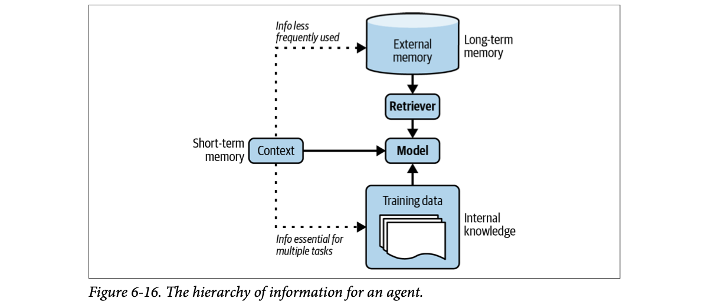
How to read this figure. The model is fed from three places: the context (short-term memory, left, solid arrow), external memory through a retriever (long-term memory, top), and training data (internal knowledge, bottom). The dotted arrows from the context show where information should move: "info less frequently used" goes up to external memory; "info essential for multiple tasks" goes down into training data.
A doctor in a busy clinic. Medical training is internal knowledge (used for every patient, changed only by more training). What you told her in the last five minutes is short-term memory. Your file in the hospital's records room is long-term memory: fetched only when needed, and it can be shredded without retraining the doctor.
Where it breaks: the doctor decides naturally what to remember; for a model, an engineer must design what moves between the three.
It's a classic memory hierarchy, like CPU registers, RAM and disk. Context is fast but small and expensive per token; external stores are big, cheap and persistent but need retrieval; weights are always-on but costly to change. Placing data by access frequency minimises cost while keeping what each task needs within reach.
"Design memory for a personal assistant agent." Say: "Three tiers: weights or system prompt for stable behaviour; the context window for the live conversation and current plan; a long-term store (vector DB plus structured tables) for facts, preferences and past sessions, retrieved per turn. A memory manager decides what to write, summarise, update or evict." This is exactly the RAG-memory design for a voice agent.
Memory is essential for humans, and developers quickly realised it matters for AI too. Many memory management tools have been built, and many model providers have added external memory. Benefits include:
Your family doctor vs a different clinic each visit. The family doctor remembers your allergy (persistence), keeps your reports in a proper file instead of a heap of papers (structure), and gives you consistent advice instead of contradicting last month's prescription (consistency).
Where it breaks: a model's "consistency" can also mean repeating an earlier wrong answer; memory preserves errors as faithfully as truths.
Each benefit is a limitation of the bare context window: it's bounded (overflow), wiped between sessions (persistence), sampled fresh each time (inconsistency) and flat text (no structure). An external memory layer with the right data structures (vector store, tables, queues) fills each gap and feeds back only what's relevant.
"Why does your agent need memory beyond chat history?" Say: "Four reasons: overflow when a task produces more than fits in context; persistence across sessions for personalisation; consistency with past answers; and structured state like task queues or tables that text context can't represent reliably."
A memory system typically has two functions:
Retrieval is like RAG retrieval (long-term memory is an external data source), so this section focuses on management, which has two operations: add and delete. If storage is unlimited, deletion may not be needed; that can work for long-term memory, since external storage is cheap and easily extended. But short-term memory is limited by the model's maximum context length, so it needs a strategy for what to add and delete.
Long-term memory can hold the overflow from short-term memory, depending on how much space you give short-term memory. For a query, the model's context holds both short-term memory and information retrieved from long-term memory. So short-term capacity depends on how much context is reserved for retrieval. If 30% is reserved, short-term memory can use at most 70% of the context limit; when that threshold is hit, the overflow moves to long-term memory.
Memory management isn't unique to AI; it's a cornerstone of all data systems, with many known strategies.
Contradictions. Some people keep the newer information; some ask an AI model to judge which to keep. It depends on the use case. Contradictions can confuse an agent, but can also help it draw on different perspectives.
A support conversation (made up). The context budget is 100 "tokens"; a slice is reserved for retrieved long-term memory. Press "next message" to add turns and watch each strategy decide what stays in short-term memory (top) and what moves to long-term memory (bottom, dashed). Orange = the message that states the goal.
Try FIFO with 30–60% reserved: by the last turn the goal message has been pushed out. Pinning the first message, summarising, or reflection-based memory all keep it, each with a cost (pinned tokens, a summarisation call, a reflection call per action).
A small fridge in a hostel room (short-term memory) and the mess's big cold store (long-term). FIFO throws out whatever went in first, even the birthday cake you bought for tomorrow. Summarising is packing leftovers into one tiffin. Reflection is checking each new item: is it new (insert), the same as something there (merge), or a fresher replacement for the old milk (replace)?
Where it breaks: food has expiry dates; information doesn't announce when it has become irrelevant.
The context is a fixed-size buffer shared between live conversation and retrieved memories, so management is a cache-eviction problem. Pure recency (FIFO/LRU-like) is cheap but blind to importance; frequency-based eviction needs usage signals the model doesn't expose; LLM-driven summarisation and reflection judge importance semantically, at the price of extra model calls and the risk of a bad summary dropping or distorting facts.
"Long conversations break your agent. What do you do?" Say: "Budget the context: reserve a slice for retrieved long-term memory, cap short-term memory, and when it overflows don't just drop the oldest turns. Pin the goal and key entities, summarise older turns with entity tracking, and push raw turns to a long-term store for retrieval. For durable user memory, after each turn let the model decide to insert, merge or replace facts, and resolve contradictions by recency or a judge, per use case."
Retrieval of long-term memory: plates 08–16. Query rewriting for follow-ups: plate 15. Caches and eviction in system design: DDIA Ch.3. Summarisation as a task: Ch.5.
Early readers told Huyen this was the chapter they were most excited about, given RAG's popularity and agents' potential.
| Term | Plain meaning |
|---|---|
| Context construction | Building the query-specific information put in front of the model; the foundation-model version of feature engineering. |
| RAG (retrieval-augmented generation) | Retrieve relevant information from external memory, then generate an answer using it. |
| Retriever / generator | The search component / the model that writes the response. |
| Indexing / querying | Preparing data for fast lookup / looking up data relevant to a query. |
| Chunk | A manageable piece of a document; the unit of retrieval (the book also calls it a document). |
| Term-based (lexical) retrieval | Ranking by keyword matches: TF-IDF, BM25. |
| TF / IDF | How often a term appears in a document / how rare the term is across documents: log(N / C(t)). |
| Inverted index | Map from each term to the documents (and counts) that contain it; used by Elasticsearch/Lucene. |
| BM25 | TF-IDF variant that normalises term frequency by document length; a formidable baseline. |
| Sparse vs dense vector | Mostly zeros (one-hot, SPLADE) vs mostly non-zero (typical embeddings). |
| Embedding-based (semantic) retrieval | Ranking by closeness of meaning using embeddings and a vector database. |
| k-NN / ANN | Exact nearest neighbours by comparing with everything / approximate nearest neighbours via indexes. |
| LSH, HNSW, PQ, IVF, Annoy | ANN methods: hashing into buckets, multi-layer proximity graph, compressing vectors into subvector codes, k-means clusters, random-split trees. |
| Context precision / recall | % of retrieved docs that are relevant / % of relevant docs that were retrieved. |
| NDCG, MAP, MRR | Ranking-aware retrieval metrics. |
| Hybrid search | Combining term-based and embedding-based retrieval. |
| Reranking | Reordering candidates with a more precise (or time-aware) scorer. |
| RRF (reciprocal rank fusion) | Merging rankings: score = Σ 1/(k + rank), k ≈ 60. |
| Query rewriting | Turning an ambiguous, conversation-dependent query into a standalone one. |
| Contextual retrieval | Augmenting each chunk with metadata, questions or an LLM-written situating context before indexing. |
| CLIP | Multimodal embedding model putting text and images in one vector space. |
| Text-to-SQL | Generating a SQL query from a natural-language question (a form of semantic parsing). |
| Agent | Anything that perceives its environment and acts upon it; defined by environment + actions. |
| Tool inventory | The set of tools an agent can use. |
| Read-only vs write action | Perceiving the environment vs changing it. |
| Function calling | Model emits structured calls to declared tools; your code executes them (modes: required, none, auto). |
| Plan / task decomposition | A roadmap of manageable actions to reach a goal under constraints. |
| Control flow | The order actions run in: sequential, parallel, if, for loop. |
| Reflection / error correction | Evaluating plans and outcomes to find mistakes / fixing them. |
| ReAct | Interleaving Thought, Act and Observation steps until Finish. |
| Reflexion | Evaluator + self-reflection module; a new trajectory after each failure. |
| Tool transition | Probability of calling tool Y after tool X; frequent pairs can be merged. |
| Skill library | Voyager's store of reusable acquired skills (code programs). |
| Internal / short-term / long-term memory | Model weights / context window / external retrievable store. |
| FIFO | First in, first out: oldest items leave short-term memory first. |
| Name | What it does with the chapter's ideas |
|---|---|
| Elasticsearch (on Lucene) | Term-based search with an inverted index; storing TF and document counts for scoring. |
| BM25, BM25+, BM25F | Length-normalised TF-IDF scorers; the standard lexical baseline. |
| NLTK, spaCy, Stanford CoreNLP | Classic NLP toolkits with tokenization for term-based retrieval. |
| SPLADE | Learned sparse embeddings from BERT, regularised to be mostly zero. |
| FAISS (Meta) | Vector search library; IVF + product quantization backbone, also LSH and HNSW. |
| ScaNN (Google) | Scalable nearest-neighbour search library. |
| Annoy (Spotify) | Tree-based ANN with random splits. |
| Hnswlib, Milvus | HNSW graph index implementations; Milvus is a vector database. |
| SPTAG (Microsoft), FLANN | Other ANN libraries. |
| Zilliz | Publishes a vector search learning series (and builds Milvus). |
| ANN-Benchmarks, BEIR, MTEB | Benchmarks for ANN algorithms (recall, QPS, build time, index size), retrieval (14 benchmarks) and embeddings. |
| Anthropic (Claude) | Contextual retrieval (50–100 token chunk contexts + hybrid BM25/embedding); "under 200K tokens, just put it all in the prompt" guidance. |
| OpenAI ChatGPT, DALL-E | ChatGPT as an agent: web search, Python execution, image generation through DALL-E; query rewriting example in Fig 6-4. OpenAI may drop the start of long conversations (FIFO). |
| CLIP | Joint text–image embeddings for multimodal RAG. |
| Perplexity | Its CEO noted that genuinely beating BM25/full-text search is hard. |
| SWE-agent | GPT-4 coding agent acting on a computer: navigate, search, view, edit. |
| Chameleon, Toolformer, Gorilla | Research agents with 13 tools, 5 finetuned tools (GPT-J), and 1,645 APIs. |
| ReAct, Reflexion, Voyager | Reason + act loops; evaluator + self-reflection; skill library of reusable programs. |
| AutoGPT, Composio | Agent frameworks focused on social media APIs vs enterprise APIs. |
| Berkeley Function Calling Leaderboard, AgentOps, TravelPlanner | Agent and function-calling benchmarks and evaluation harnesses. |
| LangChain | Memory utilities that keep the last N messages or last N tokens. |
| Bing search, HotpotQA, ScienceQA, TabMWP | A search tool used by Chameleon; multi-hop QA, science QA and tabular math benchmarks. |
Production stacks you will meet in interviews: vector databases like Qdrant, Weaviate, Pinecone and pgvector (Postgres); rerankers such as Cohere Rerank or cross-encoders from Sentence-Transformers; agent frameworks such as LangGraph, LlamaIndex and the OpenAI/Anthropic Agents SDKs; the Model Context Protocol (MCP) for declaring tools across apps; memory layers such as Mem0 or Letta (formerly MemGPT). The book doesn't cover these, but they implement exactly the ideas on this page.
Data keeps growing faster than context windows, so some apps will always need more; and models don't use long context well (focus drifts to the wrong parts), while every extra token adds cost and latency. RAG sends only what's relevant. (Anthropic's exception: under ~200K tokens, just include everything.)
Simple ratio: 10/5 = 2. With the formula log(N/C(t)): ln(2) ≈ 0.69. Both rank terms the same way; rarer terms score higher.
It normalises term frequency by document length, so long documents don't win just by mentioning terms more often (and, in the usual formula, TF saturates).
Because SPLADE uses sparse embeddings and would be grouped with term-based methods, although it behaves much more like dense embedding retrieval.
The vectors live in different spaces, so similarities are meaningless and retrieval fails. Querying must use the same embedding model as indexing; changing models means re-embedding the corpus.
Embeddings can obscure exact keywords. Fixes: hybrid search (add BM25) and contextual retrieval / metadata (put extracted entities like the error code into the chunk's metadata).
Recall needs relevance labels for every document in the database for each query; precision only needs the retrieved documents judged, which an AI judge can do.
1/61 + 1/62 ≈ 0.01639 + 0.01613 = 0.03252. (Simplified version with k = 0: 1 + 0.5 = 1.5.)
Twice as many chunks fit in the context (more diverse info), but twice as many embeddings to generate and store, a search space twice as big (slower queries), and a higher risk of cutting important context so parts of a document never get retrieved.
Say the query can't be resolved (or ask for clarification) rather than hallucinate a name, which would produce a confident wrong answer.
About 60% (0.95¹⁰) and about 0.6% (0.95¹⁰⁰). That's why agents need stronger models and reflection.
Invalid tool; valid tool with invalid parameters; valid tool with incorrect parameter values. Others: goal failure (wrong goal or broken constraints, including time) and reflection errors (believing the task is done when it isn't).
Plans become robust to tool renames and reusable across tool APIs, and models trained on natural language plan better and hallucinate less. Cost: you need a translator (Chameleon's "program generator") to map actions to commands, though that's an easier task a weaker model can do.
Likely FIFO trimming of short-term memory dropped the earliest message, wrongly assuming early messages matter less. Fix: pin the goal/system-critical facts, summarise older turns with entity tracking (or a Bae-style merge), move raw overflow to long-term memory and retrieve it, or use Liu-style reflection to insert/merge/replace memories after each action, with a reserved retrieval share of the context (e.g. 30%).